<!doctype html>
<html lang="en">
<head>
  <meta charset="utf-8">
  <meta name="viewport" content="width=device-width, initial-scale=1">
  <title>arxiv digest — 2026-08-26</title>
  <style>
:root {
  --bg: #ffffff;
  --fg: #1f2328;
  --muted: #59636e;
  --border: #d0d7de;
  --card: #f6f8fa;
  --link: #0969da;
}
body {
  max-width: 980px;
  margin: 0 auto;
  padding: 2rem 1rem 5rem;
  font-family: -apple-system, BlinkMacSystemFont, "Segoe UI", Helvetica, Arial, sans-serif;
  line-height: 1.55;
  color: var(--fg);
  background: var(--bg);
}
a { color: var(--link); }
img { max-width: 100%; height: auto; }
pre, code { background: var(--card); border-radius: 6px; }
pre { padding: 1rem; overflow-x: auto; }
blockquote { border-left: 4px solid var(--border); padding-left: 1rem; color: var(--muted); }
details { margin: 0.6rem 0; }
summary { cursor: pointer; font-weight: 600; }
.paper-figures-scroll {
  display: flex;
  gap: 1rem;
  overflow-x: auto;
  overscroll-behavior-x: contain;
  padding: 0.75rem 0.25rem 1rem;
  margin: 1rem 0 1.25rem;
  border-top: 1px solid var(--border);
  border-bottom: 1px solid var(--border);
  scroll-snap-type: x proximity;
}
.paper-figure-card {
  flex: 0 0 min(260px, 72vw);
  scroll-snap-align: start;
  background: var(--card);
  border: 1px solid var(--border);
  border-radius: 12px;
  padding: 0.55rem;
}
.paper-figure-card img {
  display: block;
  width: 100%;
  max-height: 240px;
  object-fit: contain;
  background: white;
  border-radius: 8px;
}
.paper-figure-caption {
  display: block;
  margin-top: 0.5rem;
  color: var(--muted);
  font-size: 0.85rem;
}
.figure-strip-hint {
  color: var(--muted);
  font-size: 0.9rem;
  margin-bottom: -0.3rem;
}
</style>
  <!-- MathJax: renders $...$ inline math and $$...$$ display math, plus
       \(...\) and \[...\]. Loaded from the official CDN; works offline
       once cached. Configured to skip code/pre blocks so arxiv IDs that
       look like dollar amounts don't get mangled. -->
  <script>
    window.MathJax = {
      tex: {
        inlineMath: [['$', '$'], ['\\(', '\\)']],
        displayMath: [['$$', '$$'], ['\\[', '\\]']],
        processEscapes: true,
        processEnvironments: true
      },
      options: {
        skipHtmlTags: ['script', 'noscript', 'style', 'textarea', 'pre', 'code'],
        ignoreHtmlClass: 'tex2jax_ignore',
        processHtmlClass: 'tex2jax_process'
      }
    };
  </script>
  <script id="MathJax-script" async
    src="https://cdn.jsdelivr.net/npm/mathjax@3/es5/tex-chtml.js"></script>
</head>
<body>
<header style="background-color: #333; color: white; padding: 15px; margin-bottom: 20px;">
  <h1 style="margin: 0; font-size: 24px;">
    <a href="https://ochelpan.github.io/arXiv_clean/" style="color: white; text-decoration: none;">Main</a>
  </h1>
</header>

<h1>Daily arXiv Report</h1>

<hr>
<p>
<a href="index.html">← Index</a>
 · <a href="papers_05.html">← Previous</a> · <a href="papers_07.html">Next →</a>
</p>
<hr>

<h2>Papers 101–120</h2>
<p><a id="paper-2608.22994"></a></p>
<h3 id="a-physical-response-and-memory-model-for-muon-optimization"><a href="http://arxiv.org/abs/2608.22994v1">A Physical Response-and-Memory Model for Muon Optimization</a></h3>
<p><strong>Authors:</strong> Yinze Hu, Hongjun Xiang, Xingao Gong, Hongyu Yu<br>
<strong>Type:</strong> theory · <strong>Category:</strong> disordered systems and neural networks · <strong>PDF:</strong> <a href="https://arxiv.org/pdf/2608.22994v1">https://arxiv.org/pdf/2608.22994v1</a><br>
<strong>Analysis basis:</strong> full PDF text, analyzed in chunks
<strong>Topic relevance:</strong> <code>Frenkel-Kontorova</code> <strong>1/5</strong> · <code>correlated / nonlocal dissipation</code> <strong>1/5</strong> · <code>driven-dissipative phase transition</code> <strong>1/5</strong> · <code>methods for driven-dissipative</code> <strong>1/5</strong> · <code>non-equilibrium universality</code> <strong>1/5</strong></p>
<div class="figure-strip-hint">↔ Scroll figures horizontally</div>
<div class="paper-figures-scroll">
<figure class="paper-figure-card">
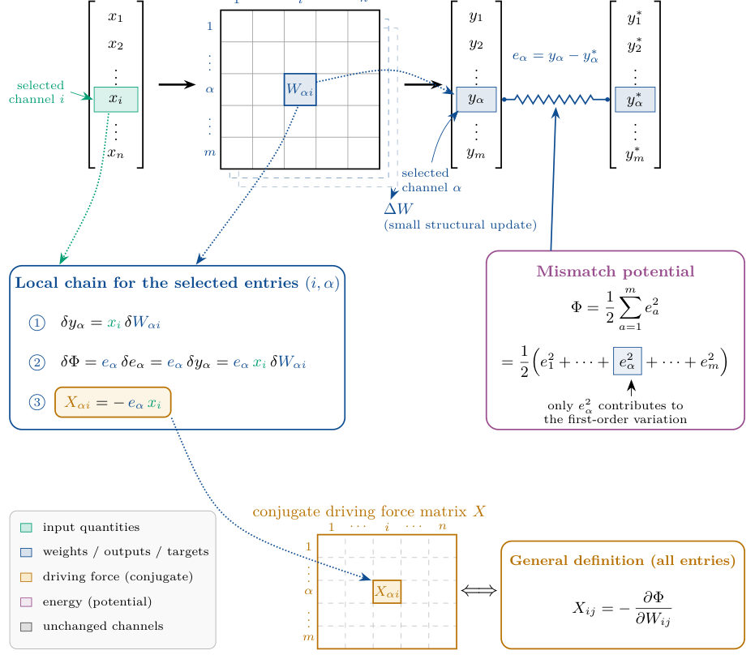
<figcaption class="paper-figure-caption"><b>Fig 1.</b> Figure 1: Construction of the responsive medium and the mismatch potential (schematic). An input x passes through the weight matrix W to produce the output y = Wx; the mismatch between the output and the target y⋆, eα = yα −y⋆ α, is measured by the mismatch potential Φ = 1</figcaption>
</figure>
<figure class="paper-figure-card">
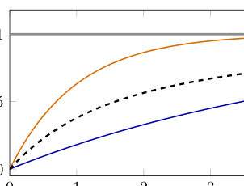
<figcaption class="paper-figure-caption"><b>Fig 2.</b> Figure 2: Glassy picture and temporal picture of the Bi-Maxwell memory (schematic).</figcaption>
</figure>
<figure class="paper-figure-card">
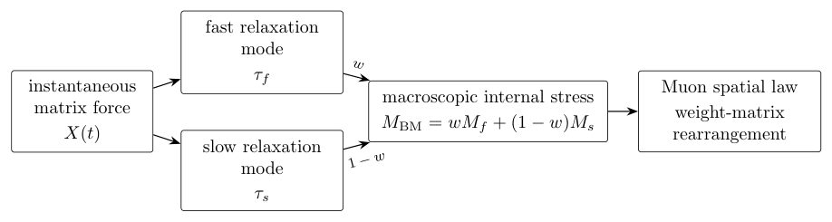
<figcaption class="paper-figure-caption"><b>Fig 3.</b> Figure 3: Two-timescale structure of Bi-Maxwell (schematic). The same matrix force X(t) drives the fast and the slow relaxation mode; the two combine with weights w and 1 −w into the macroscopic internal stress MBM = wMf +(1−w)Ms, which then enters the spatial law to complete the weight- matrix rearrangement.</figcaption>
</figure>
<figure class="paper-figure-card">
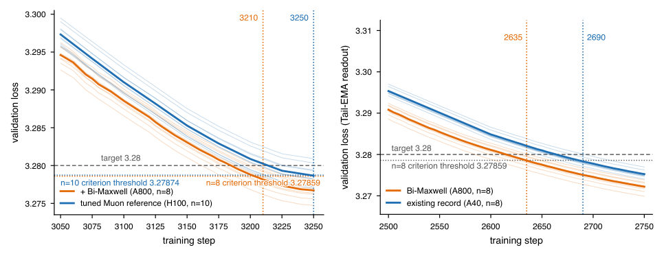
<figcaption class="paper-figure-caption"><b>Fig 4.</b> Figure 4: Thin lines are per-seed curves, thick lines arm means; the dashed line is the 3.28 target, and the dotted lines are the pass thresholds implied by the margin criterion (3.28 −¯L)√n ≥0.004, that is ¯L ≤3.28 −0.004/√n, which depends on the seed count: 3.27859 at n = 8 (orange) and 3.27874 at n = 10 (blue). (a) Bare tuned-Muon stack (raw validation loss): the two-timescale arm (orange, A800, n = 8) first crosses at step 3210; the tuned reference (blue, H100, n = 10, by its n = 10 criterion) first crosses at step 3250. (b) Record stack (Tail-EMA readout): both arms have n = 8, so only the 3.27859 threshold applies; the two-timescale arm (orange, A800) at step 2635, the existing record...</figcaption>
</figure>
<figure class="paper-figure-card">
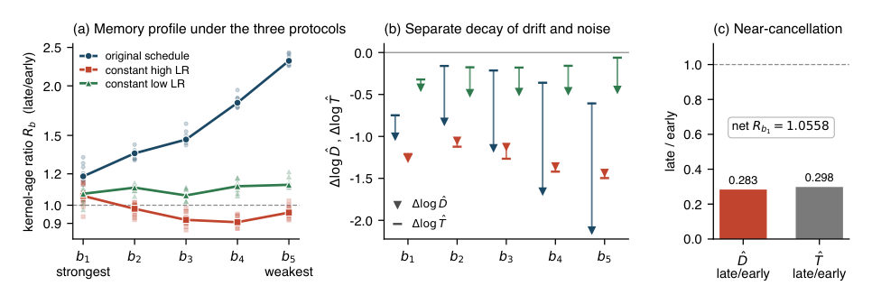
<figcaption class="paper-figure-caption"><b>Fig 5.</b> Figure 5: Band-resolved optimal-memory profile under the three learning-rate protocols. (a) The kernel-age ratio Rb across mode bands; faint small markers are the per-trajectory readings (8 each for the original schedule and the constant low learning rate, 16 for the constant high learning rate), thick lines the median across trajectories, the grey dashed line Rb = 1, and the vertical axis is logarithmic. The original schedule lengthens in all five bands, by more towards the weaker bands; under the constant high learning rate only b1 lengthens while b3–b5 shorten; under the constant low learning rate all five lengthen again. (b) Per-tensor paired ∆log ˆDb (down triangles) and ∆log ˆTb...</figcaption>
</figure>
</div>

<p><strong>Summary.</strong> This paper develops a physical model treating the neural network weight matrix as a memory-laden, responsive medium. By interpreting optimization momentum as accumulated internal stress, the authors propose the Bi-Maxwell optimizer, which uses a two-timescale memory kernel. This approach successfully models the underlying physics of learning dynamics and achieves state-of-the-art performance on LLM training benchmarks.</p>
<p><strong>Why it may be interesting.</strong> The framework draws deep analogies between the physics of dissipative media (stress, relaxation, dissipation) and the abstract mathematics of deep learning optimization, providing a physical grounding for empirical ML heuristics.</p>
<details>
<summary>Detailed structure</summary>
<p><strong>Main problem.</strong> The paper addresses the fundamental problem of determining the optimal update rule (optimizer) for training large language models, recognizing that this choice dictates the final achievable loss for a given computational budget.</p>
<p><strong>Main result.</strong> The authors propose the Bi-Maxwell optimizer, which incorporates a two-timescale stress memory, leading to significantly faster convergence on benchmark LLM training tasks.</p>
<p><strong>Method.</strong> They build a physical model treating the weight matrix as a responsive medium with memory, deriving the optimal update direction from principles of maximal dissipation under an output-side safety budget.</p>
<p><strong>Model / system.</strong> The system is the weight matrix ($W$) of a neural network, modeled as a responsive medium whose dynamics are governed by a mismatch potential ($\Phi$) that dictates restoring forces and structural rearrangement rates.</p>
<p><strong>Key observables.</strong> Momentum (interpreted as internal stress), the optimal memory length, and the structural rearrangement rate ($V$).</p>
<p><strong>Important parameters / regimes.</strong> The relaxation timescales of the stress memory (fast and slow), and the output-side safety budget ($\epsilon$).</p>
<p><strong>Assumptions / limitations.</strong> The structural rearrangement rate is assumed to be governed by a viscous analogy related to the mismatch potential, and the model predicts that the optimal memory length must grow with the training stage.</p>
<p><strong>Figures summary.</strong> Figure 1 illustrates the responsive medium construction and mismatch potential; Figure 8 shows the local kernel-age proxy ($n_\star$) confirming that the optimal memory length increases across training stages.</p>
<p><strong>Paper structure.</strong> The paper first establishes the physical analogy by defining the weight matrix as a responsive medium, deriving the governing dynamics from a mismatch potential. It then proposes the Bi-Maxwell optimizer by extending the memory kernel to two timescales, and finally validates this model by testing the predicted growth of optimal memory length against empirical benchmarks.</p>
</details>
<details>
<summary>Abstract</summary>
<p>Training large language models is costly. How low a loss the same compute can ultimately reach depends on how each step's gradient is converted into a weight update; the rule that performs this conversion is the optimizer. From SGD and AdamW to the recent Muon, effective update rules have mostly been shaped by engineering intuition and then selected on benchmarks. Muon semi-orthogonalizes the momentum matrix before applying the update and has kept breaking records on public training benchmarks; yet why the semi-orthogonalized direction works, and over how long a history the momentum should average, are two questions at present answered mainly by experience. Here we treat the weight matrix during training as a responsive medium with memory and build a physical model for it, in which both questions find answers: the semi-orthogonalized direction is the maximally dissipative response under an output-side safety budget, which explains why it works; momentum is the internal stress accumulated by the medium; how long it should average is set by the relaxation of this stress, and a real medium relaxes on more than one timescale, the simplest form being one fast and one slow. On this basis we propose the Bi-Maxwell optimizer. The framework further yields a testable consequence: gradient directions change fast early in training and more slowly later, so the optimal memory length should grow with training stage; step-by-step measurements of a proxy for it by a read-only probe across 8 independent training trajectories are consistent with this consequence. Replacing the memory kernel alone, from a single timescale to two, brings training to the target loss in noticeably fewer steps on a public large-language-model optimizer benchmark.</p>
</details>
<p><sub><a href="#top">↑ back to top</a></sub></p>

<p><a id="paper-2608.22867"></a></p>
<h3 id="note-on-boltzmanns-h-theorem-and-detailed-balance-dynamics"><a href="http://arxiv.org/abs/2608.22867v1">Note on Boltzmann's H-Theorem and Detailed Balance Dynamics</a></h3>
<p><strong>Authors:</strong> Prabodh Shukla<br>
<strong>Type:</strong> theory · <strong>Category:</strong> statistical mechanics · <strong>PDF:</strong> <a href="https://arxiv.org/pdf/2608.22867v1">https://arxiv.org/pdf/2608.22867v1</a><br>
<strong>Analysis basis:</strong> full PDF text, analyzed in chunks
<strong>Topic relevance:</strong> <code>driven-dissipative phase transition</code> <strong>1/5</strong> · <code>methods for driven-dissipative</code> <strong>1/5</strong> · <code>non-equilibrium universality</code> <strong>1/5</strong> · <code>scars &amp; prethermalization</code> <strong>1/5</strong></p>
<div class="figure-strip-hint">↔ Scroll figures horizontally</div>
<div class="paper-figures-scroll">
<figure class="paper-figure-card">
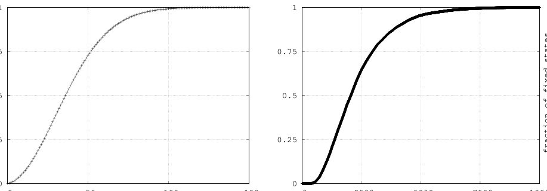
<figcaption class="paper-figure-caption"><b>Fig 1.</b> FIG. 1: Increasing fraction of states in an ensemble that acquire equal probability under detailed balance dynamics. Fig.1(a) shows simulation on a modest size ensemble of 103 states, initially having uniformly distributed probabilities over the interval [0,1]. The x-axis shows increasing Monte Carlo steps of parallel dynamics for a randomly chosen initial state of an ensemble. The y-axis shows the fraction of states in the ensemble that acquire equal probability up to the corresponding time on the x-axis. The data is averaged over 103 runs of simulation. At each step of a given run, every state is paired randomly with another state of the ensemble and assumes the probability of that state....</figcaption>
</figure>
<figure class="paper-figure-card">
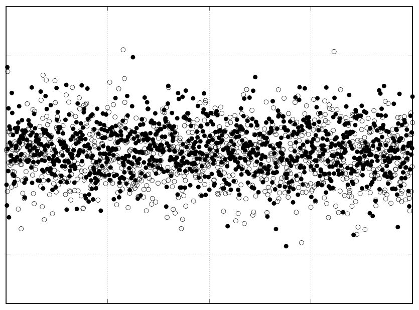
<figcaption class="paper-figure-caption"><b>Fig 2.</b> FIG. 2: Initial and final probabilities of states in an ensemble of 103 states under detailed balance dynamics. The initial probabilities {pi; i = 1, . . . , 103} are chosen from a uniform rectangular distribution over the range [0,1].The final probabilities at the end of dynamics are constant equal to p∗for every state in the ensemble; p∗is equal to one of the initial probabilities pi chosen randomly. The simulation is repeated 103 times. The figure shows average of pi (open circles) and p∗(filled circles) over different runs for each state of the ensemble. The distributions {pi} and {p∗} are numerically indistinguishable, and both are centered around the average probability equal to 1/2 as may...</figcaption>
</figure>
<figure class="paper-figure-card">
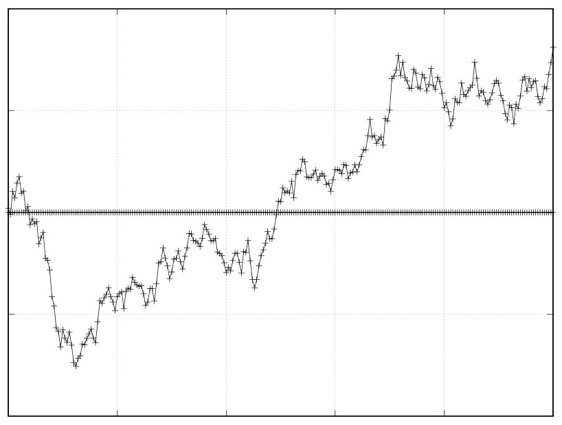
<figcaption class="paper-figure-caption"><b>Fig 3.</b> FIG. 3: This figure presents another aspect of simulations presented in earlier figures. It shows entropy of an ensemble at successive steps of detailed balance update. Although all states in an ensemble of 103 states reach equal probability in about 150 steps, the value of entropy fluctuates about its average value 1/4 in different runs. Data from 103 runs are superimposed.</figcaption>
</figure>
<figure class="paper-figure-card">
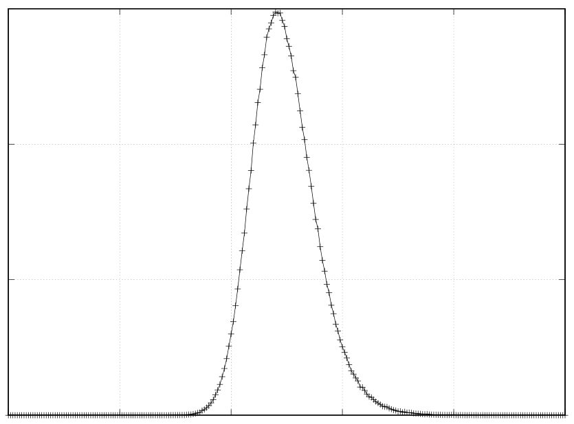
<figcaption class="paper-figure-caption"><b>Fig 4.</b> FIG. 4: Spectrum of relaxation times that bring all states in an ensemble to have the same probability. The figure shows superimposed data over 106 runs of simulations on an ensemble of 103 states. The data is normalized such that heights of all data points in the figure add up to unity. Notice there is a relatively sharp peak in the density of relaxation times.</figcaption>
</figure>
</div>

<p><strong>Summary.</strong> This paper numerically investigates Boltzmann's H-theorem by simulating how an ensemble of states approaches maximum entropy under detailed balance dynamics. It compares different update rules, finding that the rate of probability equalization is highly dependent on the connectivity of the state space. The work highlights the mathematical mechanisms underlying the arrow of time in statistical mechanics.</p>
<p><strong>Why it may be interesting.</strong> It provides a detailed numerical study of how fundamental concepts like entropy increase and equilibrium are realized in abstract dynamical systems, touching upon the deep connection between microscopic dynamics and macroscopic irreversibility.</p>
<details>
<summary>Detailed structure</summary>
<p><strong>Main problem.</strong> The paper investigates Boltzmann's H-theorem, which posits that the entropy of an ensemble increases until all states become equally probable, exploring the dynamics of this approach to equilibrium.</p>
<p><strong>Main result.</strong> The rate of probability equalization depends heavily on the update dynamics; random pairing leads to rapid convergence, while restricted dynamics (like on a circle) are significantly slower.</p>
<p><strong>Method.</strong> The study employs numerical Monte Carlo simulations to track the evolution of the ensemble's entropy and the equalization of state probabilities over time.</p>
<p><strong>Model / system.</strong> The system is an abstract ensemble of thermodynamic states with probabilities $\{p_i\}$, whose evolution is governed by dynamics satisfying detailed balance conditions.</p>
<p><strong>Key observables.</strong> Entropy change ($\Delta S$), fraction of states acquiring equal probability, and the distribution of relaxation times.</p>
<p><strong>Important parameters / regimes.</strong> The number of states ($N$), the temperature ($T$), and the specific update rule (e.g., random pairing vs. nearest neighbor on a circle).</p>
<p><strong>Assumptions / limitations.</strong> The analysis relies on the framework of detailed balance dynamics and compares results from specific discrete update rules, noting the conflict between the theorem's irreversibility and time-reversal symmetry.</p>
<p><strong>Figures summary.</strong> Figures illustrate the rapid equalization of probabilities under random pairing versus slow equalization on a circle, show entropy fluctuations around equilibrium, and map the spectrum of relaxation times.</p>
<p><strong>Paper structure.</strong> The paper introduces the H-theorem and the relevant dynamics, presents numerical simulations comparing different update rules, analyzes the convergence rates and entropy fluctuations, and discusses the theoretical implications regarding time's arrow.</p>
</details>
<details>
<summary>Abstract</summary>
<p>The Boltzmann H-theorem states that entropy of an ensemble of thermodynamic states increases until all states become equally probable. The evolution randomly picks one of the states in the ensemble and brings every other state to have the same probability as the selected state. Different realizations of evolution yield a distribution of selected states. We study this distribution numerically and discuss its relevance for equilibrium fluctuations in thermal as well as non thermal systems.</p>
</details>
<p><sub><a href="#top">↑ back to top</a></sub></p>

<p><a id="paper-2608.21586"></a></p>
<h3 id="a-minimal-mechanism-to-generate-long-timescales-without-fine-tuning"><a href="http://arxiv.org/abs/2608.21586v1">A minimal mechanism to generate long timescales without fine tuning</a></h3>
<p><strong>Authors:</strong> Kathryn McClain, Shivang Rawat, Mia Morrell, Stefano Martiniani, David J. Heeger, Flaviano Morone<br>
<strong>Type:</strong> theory · <strong>Category:</strong> disordered systems and neural networks · <strong>PDF:</strong> <a href="https://arxiv.org/pdf/2608.21586v1">https://arxiv.org/pdf/2608.21586v1</a><br>
<strong>Analysis basis:</strong> full PDF text, analyzed in chunks
<strong>Topic relevance:</strong> <code>driven-dissipative phase transition</code> <strong>1/5</strong> · <code>non-equilibrium universality</code> <strong>1/5</strong></p>
<div class="figure-strip-hint">↔ Scroll figures horizontally</div>
<div class="paper-figures-scroll">
<figure class="paper-figure-card">
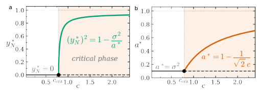
<figcaption class="paper-figure-caption"><b>Fig 1.</b> FIG. 1. Fixed points of the dynamics (3) versus in- teraction strength c. a, Activity y∗ N of the top mode and b, gain a∗. Solid lines denote the stable fixed points and the dashed lines the unstable ones. At ccrit = 1/[ √</figcaption>
</figure>
<figure class="paper-figure-card">
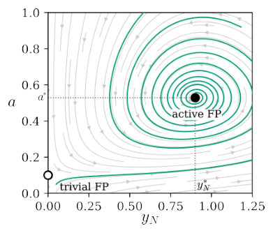
<figcaption class="paper-figure-caption"><b>Fig 2.</b> FIG. 2. Relaxation to the active fixed point. Deter- ministic flow in the (yN, a) plane for c = 1.5 and σ2 = 0.1 (only yN &gt; 0 shown). The trivial fixed point (open circle) is unstable, and trajectories spiral into the active fixed point (filled circle) at (y∗ N, a∗), with frequency ω ≈√det J2, due to the complex eigenvalues µ± = β ± iω of the block J2 in Eq. (8).</figcaption>
</figure>
<figure class="paper-figure-card">
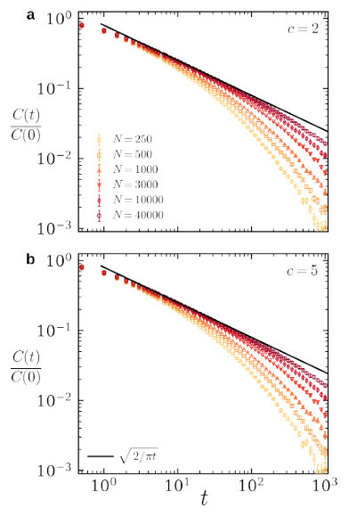
<figcaption class="paper-figure-caption"><b>Fig 3.</b> FIG. 3. Scale-free correlations throughout the criti- cal phase. Normalized correlation function of the transverse modes for a, c = 2 and b, c = 5, at system sizes from N = 250 to N = 40000, obtained by numerical integration of Eq. (3) with σ2 = 0.1 and noise amplitude D = 0.01/N, averaged over many realizations of M (error bars are s.e.m.). The black line is the prediction p</figcaption>
</figure>
</div>

<p><strong>Summary.</strong> This work proposes a minimal modification to a linear recurrent neural network by adding a dynamical feedback gain. This gain self-regulates the network's dynamics, ensuring that the system naturally operates at a critical point, thereby generating long-range, scale-free temporal correlations without requiring precise parameter tuning.</p>
<p><strong>Why it may be interesting.</strong> The mechanism of self-organization to maintain a critical state is a general principle applicable to many complex systems, including those studied in AMO physics where parameter tuning is often a major hurdle.</p>
<details>
<summary>Detailed structure</summary>
<p><strong>Main problem.</strong> The paper addresses the challenge of generating long timescales and scale-free correlations in neural dynamics without relying on fine-tuning of synaptic coupling strengths.</p>
<p><strong>Main result.</strong> Introducing a dynamical recurrent feedback gain self-organizes such that the top eigenvalue of the effective recurrent matrix always lands at the stability edge, leading to scale-free correlations generically.</p>
<p><strong>Method.</strong> The analysis involves linearizing the coupled dynamics (neuron activity and gain) around an active fixed point and analyzing the resulting relaxation rates and correlation functions.</p>
<p><strong>Model / system.</strong> The system is a minimal linear stochastic recurrent neural network model incorporating a dynamical gain term that depends on the total network activity. The dynamics are governed by coupled differential equations for neuron states and the gain parameter.</p>
<p><strong>Key observables.</strong> Long-time autocorrelation function $C(t)$, which exhibits algebraic decay ($t^{-\alpha}$) when the spectrum is gapless, and the self-organized gain $a^*$.</p>
<p><strong>Important parameters / regimes.</strong> The coupling strength $c$ (interaction strength), the noise variance $\sigma^2$, and the characteristic timescales $   au_x,   au_a$.</p>
<p><strong>Assumptions / limitations.</strong> The analysis assumes the recurrent matrix $M$ is symmetric (e.g., GOE) and that the gain unit only senses the total network activity ($\|x\|^2$).</p>
<p><strong>Figures summary.</strong> Figure 1 illustrates the emergence of an active fixed point at a critical coupling strength $c_{	ext{crit}}$. Figure 2 shows the deterministic flow spiraling into the active fixed point in the $(y_N, a)$ plane. Figure 3 confirms the $\propto t^{-1/2}$ power law decay of the normalized correlation function for various coupling strengths.</p>
<p><strong>Paper structure.</strong> The paper first establishes the problem of fine-tuning in standard models. It then introduces the dynamical gain mechanism, deriving the coupled equations. The core analysis shows that the gain self-organizes to enforce criticality, leading to a stable critical phase characterized by power-law decay, independent of the initial coupling strength.</p>
</details>
<details>
<summary>Abstract</summary>
<p>Long timescales in brain dynamics give rise to power law correlations measured in experiments. A simple linear recurrent neural network model can reproduce this power law behavior, but the recurrent interaction strength needs to be fine tuned in order to sit at the edge of stability. We show that by adding a dynamical recurrent feedback gain to the simple linear model removes the need for fine tuning, because the gain self-organizes so that the spectrum of the effective recurrent matrix is always gapless with the top eigenvalue landing on the stability edge for any recurrent strength. As a consequence, long timescales and scale free correlations arise generically, as we demonstrate both analytically and numerically.</p>
</details>
<p><sub><a href="#top">↑ back to top</a></sub></p>

<p><a id="paper-2608.22260"></a></p>
<h3 id="anomalous-metallic-states-at-magnetic-interfaces-in-an-antiferromagnetic-topological-insulator-candidate-dyptbi-with-ferroquadrupolar-order"><a href="http://arxiv.org/abs/2608.22260v1">Anomalous metallic states at magnetic interfaces in an antiferromagnetic topological insulator candidate DyPtBi with ferroquadrupolar order</a></h3>
<p><strong>Authors:</strong> Kentaro Ueda, Hiraku Saito, Zen Ogame, Isao Ishii, Ruo Hibino, Tatsuya Yanagisawa, Shinichi Itoh, Taro Nakajima, Yoshinori Tokura<br>
<strong>Type:</strong> experiment · <strong>Category:</strong> strongly correlated electrons · <strong>PDF:</strong> <a href="https://arxiv.org/pdf/2608.22260v1">https://arxiv.org/pdf/2608.22260v1</a><br>
<strong>Analysis basis:</strong> full PDF text, analyzed in chunks
<strong>Topic relevance:</strong> <code>analog quantum simulation</code> <strong>1/5</strong> · <code>quantum measurements</code> <strong>1/5</strong></p>
<div class="figure-strip-hint">↔ Scroll figures horizontally</div>
<div class="paper-figures-scroll">
<figure class="paper-figure-card">
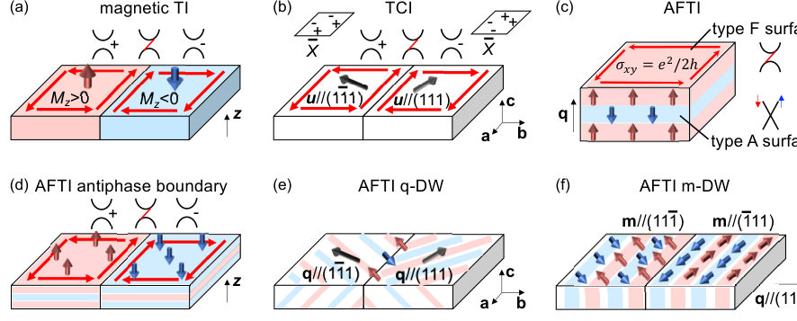
<figcaption class="paper-figure-caption"><b>Fig 1.</b> FIG. 1. Schematic pictures of electronic states at domain walls (DWs) for (a) magnetic topological</figcaption>
</figure>
<figure class="paper-figure-card">
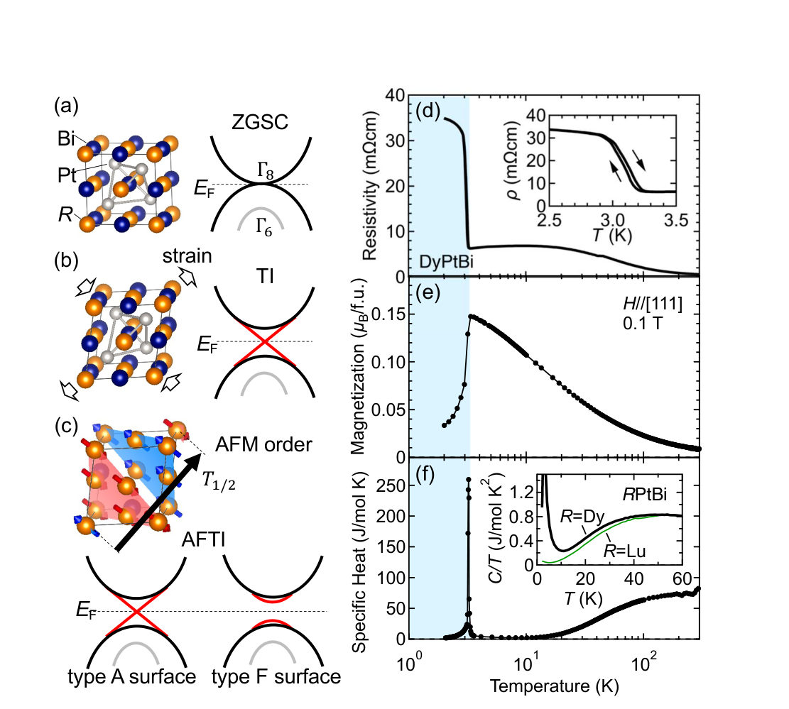
<figcaption class="paper-figure-caption"><b>Fig 2.</b> FIG. 2. Schematic picture of crystal structure and band structure for (a) zerogap semiconductor</figcaption>
</figure>
<figure class="paper-figure-card">
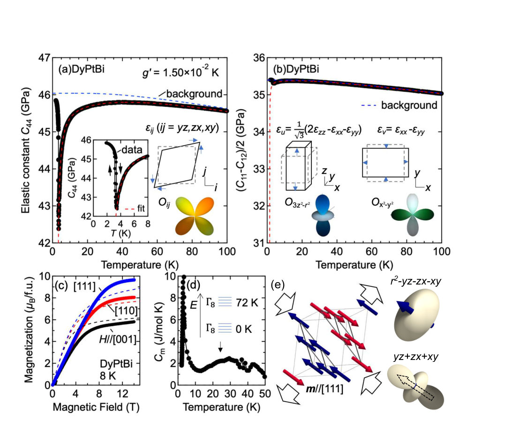
<figcaption class="paper-figure-caption"><b>Fig 3.</b> FIG. 3. Temperature dependence of elastic constants (a) C44 and (b) (C11 −C12)/2 for DyPtBi.</figcaption>
</figure>
<figure class="paper-figure-card">
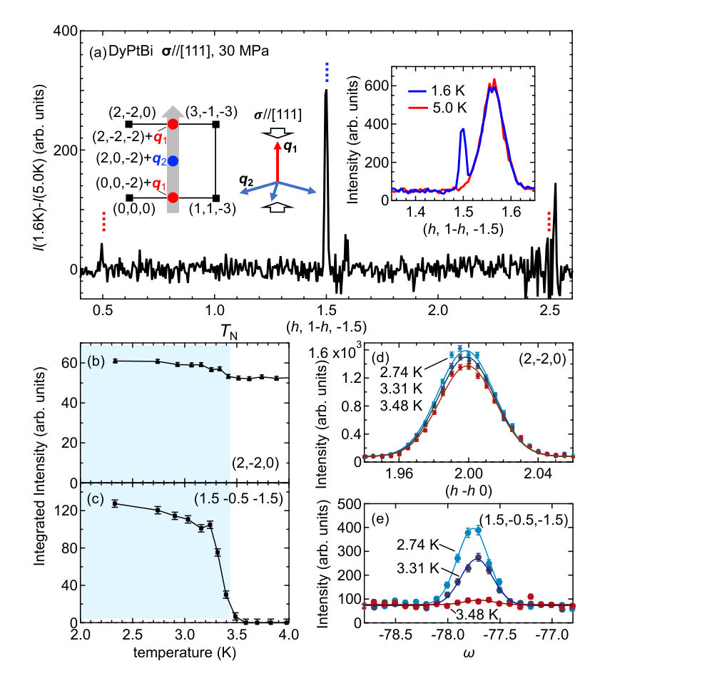
<figcaption class="paper-figure-caption"><b>Fig 4.</b> FIG. 4. (a) Difference of neutron scattering intensity between 1.6 K and 5.0 K scanning along</figcaption>
</figure>
<figure class="paper-figure-card">
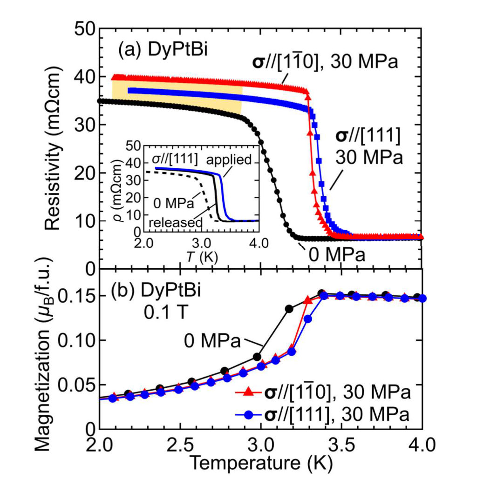
<figcaption class="paper-figure-caption"><b>Fig 5.</b> FIG. 5. Temperature dependence of (a) resistivity and (b) magnetization at ambient pressure</figcaption>
</figure>
</div>

<p><strong>Summary.</strong> This work investigates DyPtBi, an antiferromagnetic topological insulator candidate, to show how ferroquadrupolar order couples strongly to its electronic structure. By measuring resistivity and elastic constants under varying stress, the authors demonstrate that the material's topological properties can be actively controlled by manipulating its magnetic domain state. This highlights a promising route for engineering topological materials using strain engineering.</p>
<p><strong>Why it may be interesting.</strong> The strong coupling between lattice degrees of freedom (quadrupolar order) and topological electronic states provides a platform for understanding emergent quantum phenomena controllable by strain, which is relevant to designing novel quantum materials.</p>
<details>
<summary>Detailed structure</summary>
<p><strong>Main problem.</strong> Investigating anomalous metallic states at magnetic interfaces in an antiferromagnetic topological insulator candidate, focusing on the interplay between magnetic order, topological states, and ferroquadrupolar order.</p>
<p><strong>Main result.</strong> The material exhibits topological electronic states entangled with multipolar degrees of freedom, allowing for <em>in situ</em> control of topological properties via external stress.</p>
<p><strong>Method.</strong> The study combines transport measurements (resistivity), ultrasonic measurements (elastic constants), and neutron diffraction experiments under uniaxial stress.</p>
<p><strong>Model / system.</strong> The physical system is DyPtBi, an antiferromagnetic topological insulator candidate. The analysis involves modeling the coupling between the $4f$ electron spins (governed by Crystal Electric Field theory) and lattice distortions (ferroquadrupolar order).</p>
<p><strong>Key observables.</strong> Resistivity jumps, softening of the transverse ultrasonic mode ($6\%$), and a strong resistivity enhancement ($14\%$) under compressive uniaxial stress.</p>
<p><strong>Important parameters / regimes.</strong> The magnetic transition temperature ($T_N = 3.2 	ext{ K}$), the applied uniaxial stress ($\sigma//[111]$), and the coupling constants governing quadrupolar interactions.</p>
<p><strong>Assumptions / limitations.</strong> The analysis assumes the low frequency limit for CEF analysis and models the total free energy including contributions from $4f$-electrons and phonons.</p>
<p><strong>Figures summary.</strong> Figures illustrate the temperature dependence of resistivity, magnetization, and elastic constants, showing anomalies near the magnetic transition, and schematics detail the electronic states at domain walls.</p>
<p><strong>Paper structure.</strong> The paper systematically presents evidence for the interplay between magnetic and structural transitions, using transport and elastic measurements to confirm the role of ferroquadrupolar order, culminating in stress experiments that control the domain wall conductivity.</p>
</details>
<details>
<summary>Abstract</summary>
<p>Antiferromagnetic topological insulators provide a fertile platform where symmetry-breaking magnetic order is intertwined with topological electronic states. In particular, magnetic domain walls have attracted much attention, as they can be easily controlled by external fields as in general magnets, and moreover, host nontrivial electronic states distinct from those in bulks and sample surfaces. Here, we report a new antiferromagnetic topological insulator candidate DyPtBi, which hosts conductive magnetic domain walls controllable by uniaxial stress and magnetic field. We find that the resistivity exhibits abrupt increase upon the magnetic and structural phase transition. Concomitantly, the transverse ultrasonic mode shows remarkable softening of 6 %, indicating that the Dy 4f ferroquadrupolar order plays a vital role in the phase transition. Furthermore, we reveal by neutron experiments that applying compressive uniaxial stress aligns the magnetic domain state, leading to the strong resistivity enhancement of 14 % while eliminating the conductive magnetic domain walls. These findings demonstrate that DyPtBi exhibits topological electronic states entangled with multipolar degrees of freedom, providing a promising route for in situ control of topological properties.</p>
</details>
<p><sub><a href="#top">↑ back to top</a></sub></p>

<p><a id="paper-2608.23177"></a></p>
<h3 id="correlation-inequalities-for-transversal-field-models-with-application-to-quantum-glasses"><a href="http://arxiv.org/abs/2608.23177v1">Correlation inequalities for transversal field models with application to quantum glasses</a></h3>
<p><strong>Authors:</strong> Chokri Manai, Simone Warzel<br>
<strong>Type:</strong> theory · <strong>Category:</strong> disordered systems and neural networks · <strong>PDF:</strong> <a href="https://arxiv.org/pdf/2608.23177v1">https://arxiv.org/pdf/2608.23177v1</a><br>
<strong>Analysis basis:</strong> full PDF text, analyzed in chunks
<strong>Topic relevance:</strong> <code>Keldysh / 2PI / non-Gaussian methods</code> <strong>1/5</strong> · <code>analog quantum simulation</code> <strong>1/5</strong></p>
<div class="figure-strip-hint">↔ Scroll figures horizontally</div>
<div class="paper-figures-scroll">
<figure class="paper-figure-card">
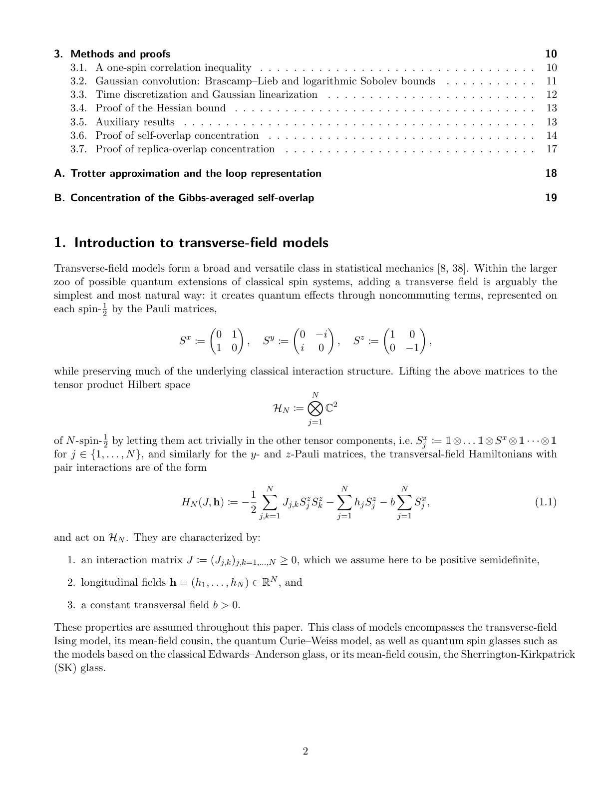
<figcaption class="paper-figure-caption"><b>Fig 1.</b> Low-resolution page preview, page 2</figcaption>
</figure>
<figure class="paper-figure-card">
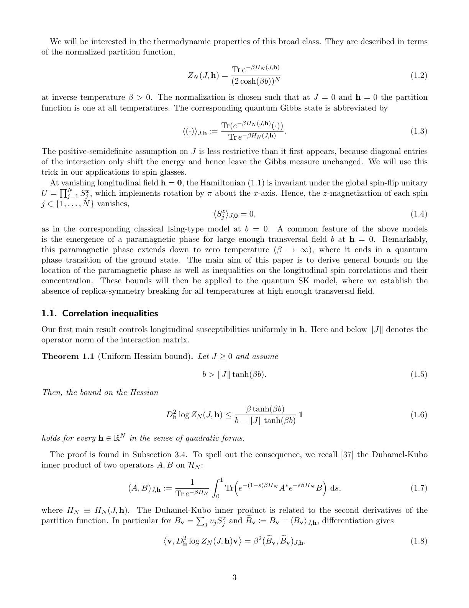
<figcaption class="paper-figure-caption"><b>Fig 2.</b> Low-resolution page preview, page 3</figcaption>
</figure>
<figure class="paper-figure-card">
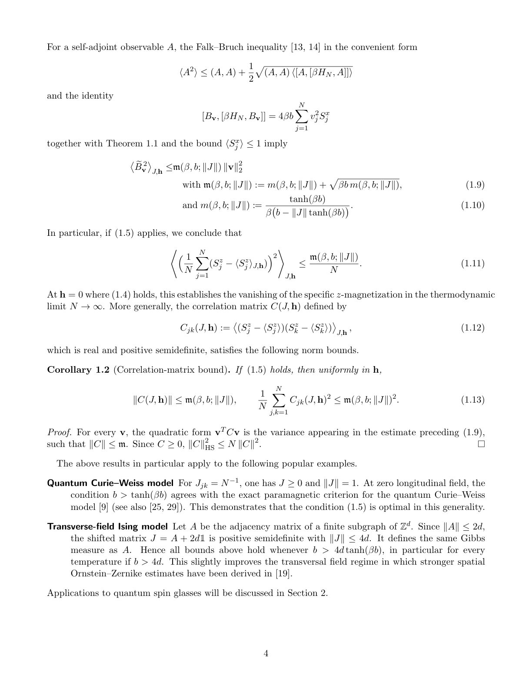
<figcaption class="paper-figure-caption"><b>Fig 3.</b> Low-resolution page preview, page 4</figcaption>
</figure>
<figure class="paper-figure-card">
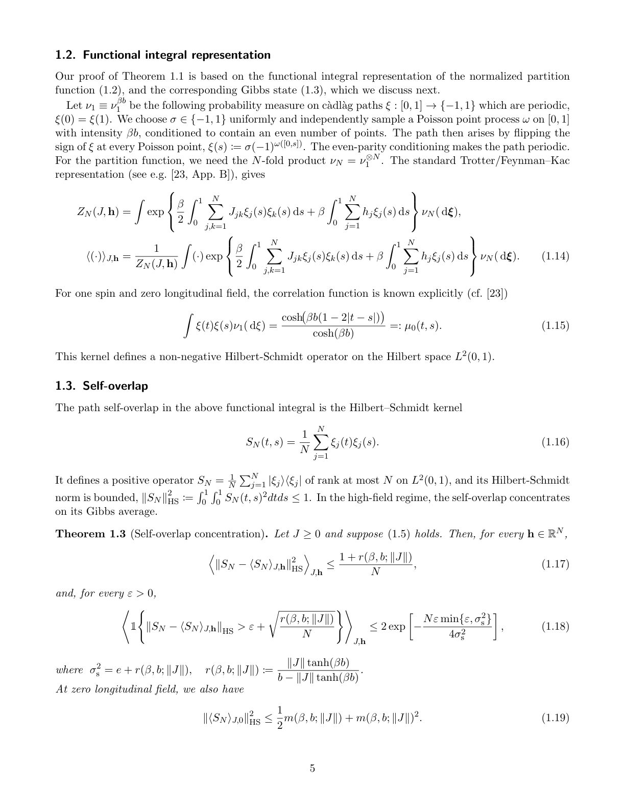
<figcaption class="paper-figure-caption"><b>Fig 4.</b> Low-resolution page preview, page 5</figcaption>
</figure>
<figure class="paper-figure-card">
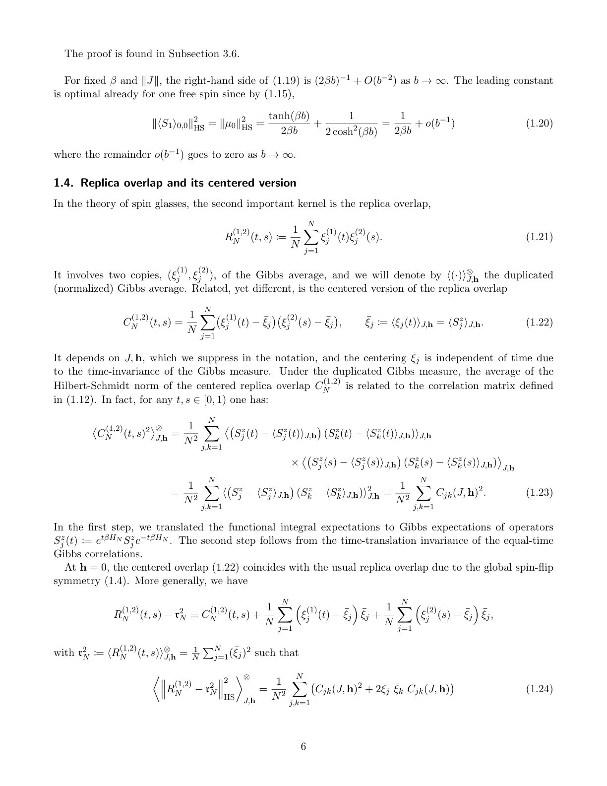
<figcaption class="paper-figure-caption"><b>Fig 5.</b> Low-resolution page preview, page 6</figcaption>
</figure>
</div>

<p><strong>Summary.</strong> This theoretical work develops general correlation inequalities for quantum spin glass models under a transversal field. By applying these inequalities, the authors characterize the phase diagram, predicting a transition from a low-field replica-symmetry-breaking regime to a high-field regime where replica order is absent. This provides deep insights into the quantum nature of glassy dynamics.</p>
<p><strong>Why it may be interesting.</strong> The rigorous mathematical tools developed for bounding overlaps and proving concentration are highly relevant for understanding quantum phase transitions in complex, disordered quantum many-body systems.</p>
<details>
<summary>Detailed structure</summary>
<p><strong>Main problem.</strong> The paper aims to derive general correlation inequalities for transversal field models and apply these tools to analyze the behavior of quantum spin glasses.</p>
<p><strong>Main result.</strong> The authors establish distinct low- and high-field overlap phases for quantum spin glasses, showing that replica order vanishes in the high-field limit.</p>
<p><strong>Method.</strong> The core methodology involves deriving a general correlation inequality using Gaussian convolution estimates, which extends the Ding-Song-Sun inequality and employs Brascamp-Lieb convexity techniques.</p>
<p><strong>Model / system.</strong> The study focuses on transversal field models with pair interactions, encompassing the quantum Curie-Weiss, transversal field Ising model, and quantum spin glasses based on the Sherrington-Kirkpatrick (SK) and Edwards-Anderson models.</p>
<p><strong>Key observables.</strong> Self-overlap ($S_N$), replica overlap ($R^{(1,2)}_N$), and the normalized quenched pressure ($p_N$).</p>
<p><strong>Important parameters / regimes.</strong> Transversal field strength ($b$), interaction strength ($\|J\|$), and inverse temperature ($eta$).</p>
<p><strong>Assumptions / limitations.</strong> The analysis assumes the existence of sufficiently strong transversal fields and relies on functional integral representations and concentration inequalities.</p>
<p><strong>Paper structure.</strong> The paper builds from establishing general correlation inequalities (Theorem 1.1) to proving concentration bounds for self- and replica-overlaps (Theorems 1.3 and 1.4), culminating in the determination of high-field asymptotics for the pressure in the quantum SK model.</p>
</details>
<details>
<summary>Abstract</summary>
<p>We study the class of transversal field models with pair interactions, including the quantum Curie-Weiss and the transversal field Ising model, as well as quantum spin glasses based on the Sherrington-Kirkpatrick (SK) and Edwards-Anderson models. Our main result is a general correlation inequality based on a Gaussian convolution estimate, which is derived from an extension of the Ding-Song-Sun inequality and an application of Brascamp-Lieb convexity techniques. The results apply for sufficiently strong transversal fields and, for quantum spin glasses, yield a high-field regime without replica order. Combined with the previously established low-field replica-symmetry-breaking regime, this gives distinct low- and high-field overlap phases. As a corollary of the logarithmic Sobolev inequalities for the underlying functional integrals derived here, we show the concentration of the self- and replica-overlap, and determine the high-field asymptotics of the pressure in the quantum SK model.</p>
</details>
<p><sub><a href="#top">↑ back to top</a></sub></p>

<p><a id="paper-2608.22810"></a></p>
<h3 id="numerical-evaluation-of-zx-calculus-optimization-for-solovay-kitaev-quantum-circuit-synthesis"><a href="http://arxiv.org/abs/2608.22810v1">Numerical Evaluation of ZX Calculus Optimization for Solovay Kitaev Quantum Circuit Synthesis</a></h3>
<p><strong>Authors:</strong> Dulari De Silva, Anuradha Mahasinghe, Chon-Fai Kam, Kaushika De Silva, Frederic Cadet, Jingbo Wang<br>
<strong>Type:</strong> theory · <strong>Category:</strong> quantum information and computing · <strong>PDF:</strong> <a href="https://arxiv.org/pdf/2608.22810v1">https://arxiv.org/pdf/2608.22810v1</a><br>
<strong>Analysis basis:</strong> full PDF text, analyzed in chunks
<strong>Topic relevance:</strong> <code>analog quantum simulation</code> <strong>1/5</strong> · <code>methods for driven-dissipative</code> <strong>1/5</strong></p>
<div class="figure-strip-hint">↔ Scroll figures horizontally</div>
<div class="paper-figures-scroll">
<figure class="paper-figure-card">
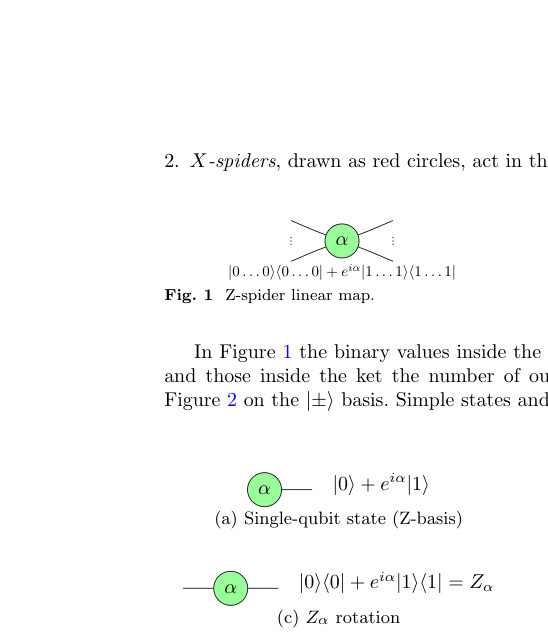
<figcaption class="paper-figure-caption"><b>Fig 1.</b> Fig. 3 Diagrammatic representations of foundational ZX-calculus spider components: (a) Single- qubit state preparation in the green Z-basis; (b) Single-qubit state preparation in the red X-basis; (c) Green Zα rotation operator with single input and single output; (d) Red Xα rotation operator with single input and single output.</figcaption>
</figure>
<figure class="paper-figure-card">
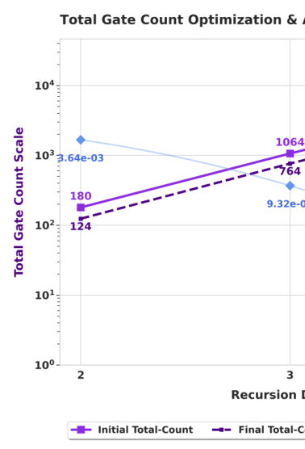
<figcaption class="paper-figure-caption"><b>Fig 2.</b> Fig. 7 Total gate count before and after ZX-calculus post-processing for the worked example Rx(2.3), with the achieved error on the right-hand axis, against recursion depth. The error series is a function of the depth alone and is unchanged by the optimization.</figcaption>
</figure>
<figure class="paper-figure-card">
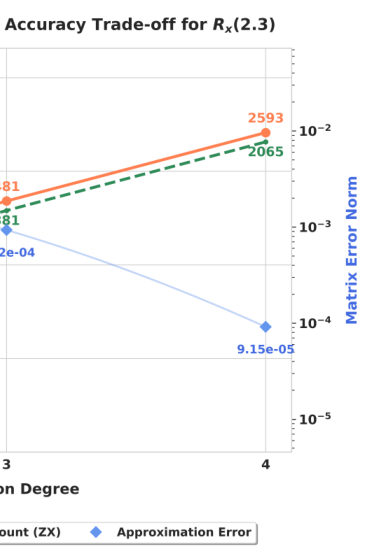
<figcaption class="paper-figure-caption"><b>Fig 3.</b> Fig. 8 T-count before and after ZX-calculus post-processing for the worked example Rx(2.3), with the achieved error on the right-hand axis, against recursion depth.</figcaption>
</figure>
<figure class="paper-figure-card">
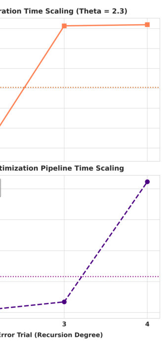
<figcaption class="paper-figure-caption"><b>Fig 4.</b> Fig. 9 Wall-clock time against recursion depth for the worked example. Upper panel: synthesis alone. Lower panel: the combined pipeline. The dotted lines mark the means over the four depths.</figcaption>
</figure>
</div>

<p><strong>Summary.</strong> This work quantifies the structural redundancy present in quantum circuits generated by the Solovay-Kitaev algorithm. By employing diagrammatic post-processing via ZX-calculus, the authors demonstrate that significant portions of the gate count and T-count can be removed without affecting the implemented quantum operation. This suggests a powerful, systematic optimization pathway for compiling complex quantum circuits.</p>
<p><strong>Why it may be interesting.</strong> While focused on quantum computation, the rigorous analysis of structural redundancy and the development of efficient compilation techniques using diagrammatic methods (ZX-calculus) provides valuable theoretical tools applicable to optimizing quantum simulations in AMO physics.</p>
<details>
<summary>Detailed structure</summary>
<p><strong>Main problem.</strong> The paper addresses the structural redundancy inherent in quantum circuits synthesized using the Solovay-Kitaev algorithm for approximating arbitrary single-qubit unitaries.</p>
<p><strong>Main result.</strong> Diagrammatic post-processing using ZX-calculus rewriting successfully recovers a significant fraction of this redundancy, removing 26.6-30.1% of the total gate count and 18.5-22.2% of the T-count.</p>
<p><strong>Method.</strong> The authors synthesize target unitaries using Solovay-Kitaev, map the resulting gate sequences to ZX-diagrams, and then apply automated graph-theoretic rewriting rules to simplify the structure.</p>
<p><strong>Model / system.</strong> The model is fault-tolerant quantum computation, specifically synthesizing single-qubit unitaries ($U \in SU(2)$) using the Clifford+T gate set.</p>
<p><strong>Key observables.</strong> Total gate count, T-count, and the percentage reduction achieved after post-processing.</p>
<p><strong>Important parameters / regimes.</strong> Recursion depth (controls approximation level $\epsilon_k$), target unitary family ($R_x, R_y, R_z, U(	heta, \phi, \lambda)$), and the required precision $\epsilon$.</p>
<p><strong>Assumptions / limitations.</strong> The comparison is against unoptimized Solovay-Kitaev output, and the compile-time cost of the rewriting layer can become dominant at deep recursion levels.</p>
<p><strong>Figures summary.</strong> Figures illustrate the fundamental rewrite rules of the ZX-calculus and show the evolution of gate/T-count reduction versus recursion depth.</p>
<p><strong>Paper structure.</strong> The paper details the synthesis process, the mapping to ZX-diagrams, the application of automated rewriting rules, and quantitative measurements comparing the initial circuit size to the optimized size across various depths and targets.</p>
</details>
<details>
<summary>Abstract</summary>
<p>Fault-tolerant architectures implement non-Clifford T gates through magic-state distillation, so the T-count of a synthesized circuit dominates its physical cost. The Solovay-Kitaev algorithm approximates any single-qubit unitary from a finite gate set with a sequence length that grows only polylogarithmically in the inverse target error, but it optimizes for numerical convergence rather than circuit economy, and its output carries structural redundancy that a gate-level compiler cannot see. We report a measurement of what diagrammatic post-processing recovers from that redundancy. Twelve hundred random single-qubit targets, spanning the three Pauli rotation families and the general gate U(theta, phi, lambda), are synthesized over Clifford+T at three recursion depths, translated into graph-like ZX-diagrams, simplified by automated rewriting, and extracted back to circuits. Post-processing removes 26.6-30.1% of the total gate count and 18.5-22.2% of the T-count. The absolute saving grows with recursion depth, from about 60 to about 1600 gates, while the fractional saving does not: it rises slightly from the shallowest setting and is then flat across a twenty-five-fold change in circuit length, and by the deepest setting the four target families are no longer distinguishable from one another. Because the rewrite rules preserve the implemented linear map, the approximation error is unchanged. The compile-time cost of the rewriting layer, by contrast, grows sharply with depth and comes to dominate the synthesis itself.</p>
</details>
<p><sub><a href="#top">↑ back to top</a></sub></p>

<p><a id="paper-2608.23231"></a></p>
<h3 id="quantum-monte-carlo-in-the-age-of-many-body-quantum-information"><a href="http://arxiv.org/abs/2608.23231v1">Quantum Monte Carlo in the Age of Many-Body Quantum Information</a></h3>
<p><strong>Authors:</strong> Yi-Ming Ding, Bin-Bin Mao, Zheng Yan<br>
<strong>Type:</strong> theory · <strong>Category:</strong> numerical methods · <strong>PDF:</strong> <a href="https://arxiv.org/pdf/2608.23231v1">https://arxiv.org/pdf/2608.23231v1</a><br>
<strong>Analysis basis:</strong> full PDF text, analyzed in chunks
<strong>Topic relevance:</strong> <code>analog quantum simulation</code> <strong>1/5</strong> · <code>methods for driven-dissipative</code> <strong>1/5</strong></p>
<div class="figure-strip-hint">↔ Scroll figures horizontally</div>
<div class="paper-figures-scroll">
<figure class="paper-figure-card">
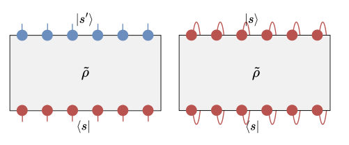
<figcaption class="paper-figure-caption"><b>Fig 1.</b> FIG. 1: Diagrammatic illustration of a density matrix and its trace. (a) An open-time-boundary matrix element ⟨s|˜ρ|s′⟩, where ˜ρ connects the ket boundary state |s′⟩to the bra boundary state ⟨s| along the transfer direction. (b) The trace Tr(˜ρ), obtained by identifying s = s′, closing the boundary legs, and summing over the common boundary state. Only the boundary states are shown explicitly; representation-dependent auxiliary variables, such as SSE operator strings or path-integral imaginary-time histories, are omitted.</figcaption>
</figure>
<figure class="paper-figure-card">
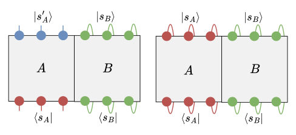
<figcaption class="paper-figure-caption"><b>Fig 2.</b> FIG. 2: Diagrammatic illustration of a RDM and its trace. (a) The matrix element ⟨sA|˜ρA|s′ A⟩is obtained by identifying and summing over the B boundary states of the full density matrix, while keeping the A boundary states open. (b) Taking TrA(˜ρA) further identifies and sums over the remaining A boundary states, closing all boundary legs and giving TrA(˜ρA) = Tr(˜ρ).</figcaption>
</figure>
<figure class="paper-figure-card">
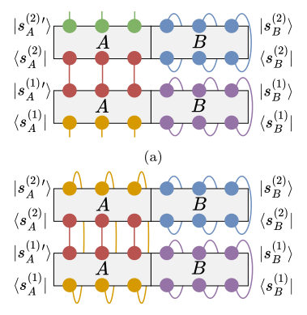
<figcaption class="paper-figure-caption"><b>Fig 3.</b> FIG. 3: Diagrammatic illustration of the replicated RDM ˜ρ2 A and its trace. (a) The open-boundary matrix element of ˜ρ2 A. The two replicas are glued sequentially in subsystem A: the ket boundary state |s(1) A ′⟩of the first replica is identified with the bra boundary state ⟨s(2) A | of the second. The B degrees of freedom are traced within each replica. (b) The trace TrA(˜ρ2 A), obtained by further identifying and summing over the remaining open A boundary states |s(2) A ′⟩and ⟨s(1) A |. This closes all A boundary legs.</figcaption>
</figure>
<figure class="paper-figure-card">
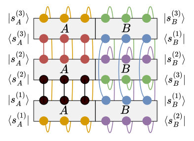
<figcaption class="paper-figure-caption"><b>Fig 4.</b> FIG. 4: Diagrammatic illustration of the partially transposed replicated partition function Tr[(˜ρTB AB)3]. The three replicas are glued cyclically in subsystem A, as in the ordinary replicated construction. In subsystem B, however, the partial transpose changes the boundary connectivity, producing a different gluing pattern between replicas.</figcaption>
</figure>
<figure class="paper-figure-card">
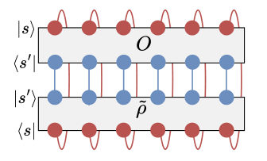
<figcaption class="paper-figure-caption"><b>Fig 5.</b> FIG. 5: Diagrammatic illustration of the operator-inserted partition function ZO = Tr(˜ρO). The upper replica represents the operator insertion O, while the lower replica represents the density matrix ˜ρ. Closing the boundary indices implements the trace.</figcaption>
</figure>
</div>

<p><strong>Summary.</strong> This review summarizes how Quantum Monte Carlo methods can be adapted to calculate complex, nonlinear quantum information diagnostics for many-body systems. It moves beyond simple expectation values to compute measures like entanglement entropy by sampling the full density matrix structure. This work is crucial for advancing the study of quantum correlations in strongly correlated materials using powerful numerical tools.</p>
<p><strong>Why it may be interesting.</strong> It is highly relevant as it bridges advanced numerical techniques (QMC) with cutting-edge diagnostics in quantum information (entanglement measures), providing a roadmap for future simulations in AMO physics.</p>
<details>
<summary>Detailed structure</summary>
<p><strong>Main problem.</strong> The paper addresses the challenge of extending Quantum Monte Carlo (QMC) methods beyond calculating conventional linear observables to compute complex, nonlinear diagnostics from many-body quantum information theory.</p>
<p><strong>Main result.</strong> It provides a unified perspective on adapting QMC to extract advanced quantum information measures, such as entanglement entropies and entanglement spectra, for strongly correlated systems.</p>
<p><strong>Method.</strong> The review details various QMC formulations, including those based on generalized partition-function ratios, allowing access to off-diagonal density matrix elements necessary for entanglement diagnostics.</p>
<p><strong>Model / system.</strong> The focus is on strongly correlated quantum many-body systems, using qubit or spin-1/2 systems as the primary concrete setting, though the discussion is broadly applicable to qudit and bosonic systems.</p>
<p><strong>Key observables.</strong> Entanglement entropies, entanglement spectra, Rényi negativities, stabilizer entropies, and observables related to spontaneous symmetry breaking.</p>
<p><strong>Important parameters / regimes.</strong> The primary limitation discussed is the sign problem, which restricts the applicability of QMC methods.</p>
<p><strong>Assumptions / limitations.</strong> The review assumes that the physical systems under consideration admit sign-problem-free QMC representations for the desired observables.</p>
<p><strong>Figures summary.</strong> Figure 1 illustrates the mathematical difference between calculating the trace of a density matrix (full configuration space) versus calculating an open-time-boundary matrix element, highlighting the need to close boundary indices.</p>
<p><strong>Paper structure.</strong> The discussion is organized logically by state representations (Section II), choice of basis (Section III), and general ratio estimation techniques (Section IV) to build a comprehensive methodological guide.</p>
</details>
<details>
<summary>Abstract</summary>
<p>Quantum Monte Carlo (QMC) methods are among the central numerical tools for studying strongly correlated quantum many-body systems, particularly in higher dimensions. As quantum information has introduced new information-theoretic perspectives and diagnostics into many-body physics, QMC methods have accordingly been extended beyond the measurement of conventional linear observables. This review summarizes recent progress in adapting QMC to many-body quantum-information, focusing on qubit or spin-$1/2$ systems as a concrete setting while keeping the discussion broadly applicable to qudit and bosonic systems. We present a unified perspective on the extraction of nonlinear diagnostics, including entanglement entropies and entanglement spectra, Rényi negativities for mixed-state entanglement, stabilizer entropies for quantum magic, and decoherence-driven phenomena such as the interplay between imaginary-time evolution and decoherence and strong-to-weak spontaneous symmetry breaking.</p>
</details>
<p><sub><a href="#top">↑ back to top</a></sub></p>

<p><a id="paper-2608.21633"></a></p>
<h3 id="a-high-entropy-form-of-math865mathmnmath866mathsnmath867math-with-distinct-magnetotransport-regimes-correlated-to-different-magnetic-structures"><a href="http://arxiv.org/abs/2608.21633v1">A high-entropy form of $R$Mn$_6$Sn$_6$ with distinct magnetotransport regimes correlated to different magnetic structures</a></h3>
<p><strong>Authors:</strong> Kyle W. Fruhling, Jonathan Gaudet, William D. Ratcliff, Jonathan S. White, Siddharth Nandanwar, Noah J. Fau, Gregory T. McCandless, Enrique O. González Delgado, Julia Y. Chan, Oksana Zaharko, Michael A. Susner, Fazel Tafti<br>
<strong>Type:</strong> experiment · <strong>Category:</strong> strongly correlated electrons · <strong>PDF:</strong> <a href="https://arxiv.org/pdf/2608.21633v1">https://arxiv.org/pdf/2608.21633v1</a><br>
<strong>Analysis basis:</strong> full PDF text, analyzed in chunks
<strong>Topic relevance:</strong> <code>Frenkel-Kontorova</code> <strong>1/5</strong></p>
<div class="figure-strip-hint">↔ Scroll figures horizontally</div>
<div class="paper-figures-scroll">
<figure class="paper-figure-card">
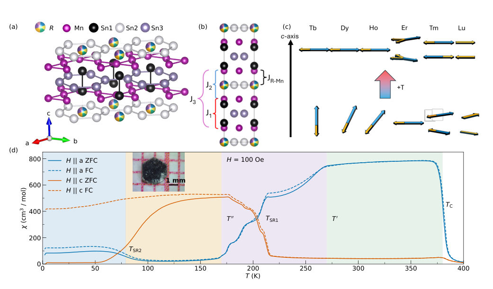
<figcaption class="paper-figure-caption"><b>Fig 1.</b> FIG. 1. (a) The crystal structure of HE166 (same as other RMn6Sn6) showing the mixed rare-earth site and the kagome Mn layer. (b) Magnetic couplings in the RMn6Sn6 structure. (c) Magnetic ground states of various RMn6Sn6 materials in their pure form containing the rare-earth elements that were used to produce HE166. The blue arrows represent the rare-earth moment of a given unit cell and the orange arrows represent the Mn moments in a unit cell. (d) DC susceptibility vs. temperature measured in HE166. Inset: Example image of a hexagonal HE166 crystal on millimeter paper.</figcaption>
</figure>
<figure class="paper-figure-card">
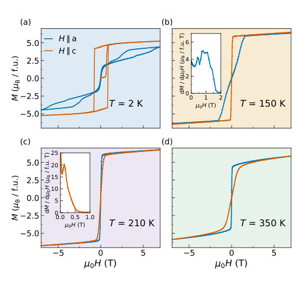
<figcaption class="paper-figure-caption"><b>Fig 2.</b> FIG. 2. Magnetization as a function of field measured in HE166 at (a) 2 K, (b) 150 K (inset: derivative of magne- tization with respect to field with H∥a), (c) 210 K (inset: derivative of magnetization with respect to field with H∥c), and (d) 350 K. The background color of each panel corre- sponds to the temperature regimes in Fig. 1d.</figcaption>
</figure>
<figure class="paper-figure-card">
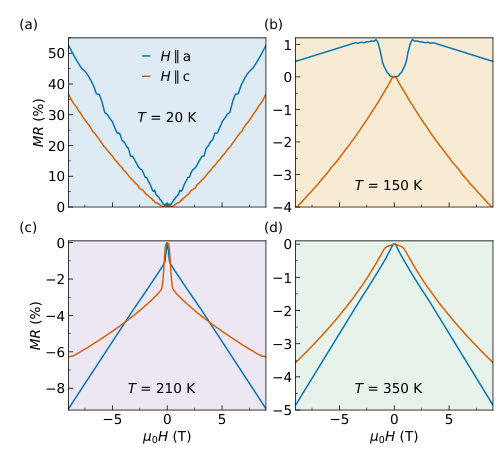
<figcaption class="paper-figure-caption"><b>Fig 3.</b> FIG. 3. Longitudinal magnetoresistance as a function of field for HE166 at (a) 20 K, (b) 150 K, (c) 210 K, and (d) 350 K. The background color of each panel corresponds to the temperature regimes in Fig. 1d. All four panels show in-plane resistivity data, measured under both in-plane field (blue line) and out-of-plane field (orange line).</figcaption>
</figure>
<figure class="paper-figure-card">
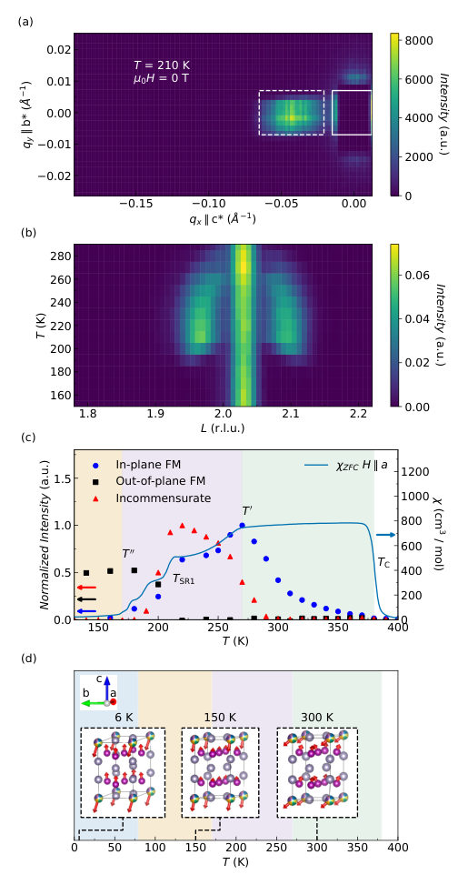
<figcaption class="paper-figure-caption"><b>Fig 4.</b> FIG. 4. (a) SANS intensity at 210 K and zero-field. The white solid box highlights the region near the beam stop inte- grated in order to estimate the ferromagnetic in-plane contri- bution, and the white dotted box highlights the incommen- surate peak. (b) Neutron high-angle diffraction intensity in zero-field around the (002) nuclear peak. Incommensurate satellite peaks appear between 170 K and 270 K. (c) Left axis: the relative intensity of three different scattering pro- cesses; the in-plane FM contribution of the Q∼0 integration region (blue circles) as shown in the solid box in (a), its out- of-plane contribution (black squares), and the intensity of the satellite peak (red triangles)...</figcaption>
</figure>
<figure class="paper-figure-card">
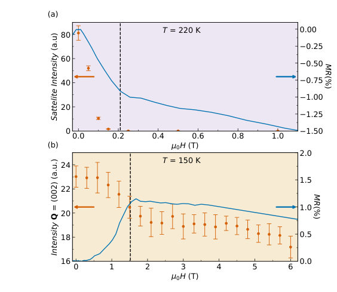
<figcaption class="paper-figure-caption"><b>Fig 5.</b> FIG. 5. (a) Left axis: Satellite peak intensity at 220 K as a function of field showing complete suppression by 0.2 T. Right axis: Magnetoresistance at 220 K showing a change of slope at the same field where the satellite intensity is suppressed. (b) Left axis: Q = (002) peak intensity vs. field at 150 K showing a kink and sharp decrease in intensity near 1.5 T. Right axis: Magnetoresistance at 150 K showing a corresponding change from increasing to decreasing magnetoresistance.</figcaption>
</figure>
</div>

<p><strong>Summary.</strong> This work investigates a high-entropy rare-earth manganite, $  ext{RMn}_6  ext{Sn}_6$, to understand how mixing multiple rare-earth elements controls its magnetic state. Through extensive measurements, the authors map out multiple magnetic transitions and observe a correlation between the magnetotransport anomalies and an incommensurate spin modulation. This highlights the potential for rare-earth engineering in designing novel magnetic materials.</p>
<p><strong>Why it may be interesting.</strong> The study demonstrates how engineering disorder (high-entropy mixing) can stabilize and reveal complex, multi-stage magnetic ground states and associated transport phenomena, which is a key area of modern condensed matter physics.</p>
<details>
<summary>Detailed structure</summary>
<p><strong>Main problem.</strong> To investigate how the interplay of multiple rare-earth elements in a high-entropy $  ext{RMn}_6  ext{Sn}_6$ structure influences its magnetic ordering and magnetotransport properties.</p>
<p><strong>Main result.</strong> The material exhibits complex, temperature-dependent magnetic transitions (Paramagnet $    o$ easy-plane $ o$ easy-axis $  o$ canted $ ext{FiM}$) correlated with an incommensurate modulated spin state and nonmonotonic magnetoresistance.</p>
<p><strong>Method.</strong> The study combines multiple experimental techniques, including magnetization measurements (MPMS), electrical transport (Hall effect, MR), and advanced neutron scattering (SANS, single-crystal diffraction).</p>
<p><strong>Model / system.</strong> The physical system is the high-entropy compound $  ext{HE}166 = (  ext{Tb},    ext{Dy},    ext{Ho},    ext{Er},    ext{Tm},    ext{Lu})_1  ext{Mn}_6   ext{Sn}_6$, which is a layered magnet whose magnetism is governed by competing rare-earth interactions.</p>
<p><strong>Key observables.</strong> Magnetic transition temperatures ($T_C=380 	ext{ K}$, $T_{	ext{SR}1}=207 	ext{ K}$, $T_{	ext{SR}2}=79 	ext{ K}$), magnetoresistance ($ ext{MR}$), and incommensurate magnetic scattering peaks ($\mathbf{k}_{  ext{inc}}$).</p>
<p><strong>Important parameters / regimes.</strong> The rare-earth mixing ratio and the temperature/field regimes defining the magnetic anisotropy transitions (e.g., $270 	ext{ K}$ to $170 	ext{ K}$ for easy-plane to easy-axis change).</p>
<p><strong>Assumptions / limitations.</strong> The magnetic behavior is assumed to be dictated by the interplay of various magnetic couplings ($J_1, J_2, J_3, J_{	ext{R-Mn}}$) and the rare-earth mixing effects.</p>
<p><strong>Figures summary.</strong> Figures detail magnetization curves, magnetoresistance vs. field plots, and neutron scattering data showing both commensurate and incommensurate magnetic reflections at various temperatures.</p>
<p><strong>Paper structure.</strong> The paper systematically characterizes the material's structure (XRD, EDX), maps out its magnetic phase transitions using magnetization measurements, and correlates these magnetic changes with transport anomalies (MR, Hall effect) and structural probes (Neutron Scattering).</p>
</details>
<details>
<summary>Abstract</summary>
<p>The kagome $R$Mn$_6$Sn$_6$ material family has attracted significant attention as high-temperature metallic magnets with a host of different magnetic orderings and anisotropy. Theoretical studies point to the rare-earth ($R$) as the determining factor for both the direction of magnetic anisotropy and the type of magnetic ordering in a given compound. This motivates studying high-entropy forms of $R$Mn$_6$Sn$_6$ to examine how the interplay of several rare-earth elements leads to different magnetic states in a single crystal. Here, we present a rare-earth mix of Tb, Dy, Ho, Er, Tm, and Lu that produces phase transitions from a paramagnet to an easy-plane ferrimagnet (FiM) below $T_{\text{C}}$ = 380 K, then to a FiM easy-axis state at $T_{\text{SR1}}$ = 207 K, to a canted FiM ground state below $T_{\text{SR2}}$ = 79 K. This behavior is consistent with previously reported high-entropy $R$Mn$_6$Sn$_6$ compounds; however, uniquely, the rare-earth mix studied here exhibits a broad transition from easy-plane to easy-axis anisotropy from 270 K to 170 K, and reveals a nonmonotonic magnetoresistance. Using neutron scattering data, we found that both observations correlate with an incommensurate modulated contribution to the spin state due to competing rare-earth interactions. This magnetoresistive behavior and the correlated spin structures underscore the potential for rare-earth engineering of magnetism.</p>
</details>
<p><sub><a href="#top">↑ back to top</a></sub></p>

<p><a id="paper-2608.21508"></a></p>
<h3 id="anomalous-local-heat-capacity-and-bipartite-entanglement"><a href="http://arxiv.org/abs/2608.21508v1">Anomalous Local Heat Capacity and Bipartite Entanglement</a></h3>
<p><strong>Authors:</strong> Jake Xuereb, A. de Oliveira Junior<br>
<strong>Type:</strong> theory · <strong>Category:</strong> statistical mechanics · <strong>PDF:</strong> <a href="https://arxiv.org/pdf/2608.21508v1">https://arxiv.org/pdf/2608.21508v1</a><br>
<strong>Analysis basis:</strong> full PDF text, analyzed in chunks
<strong>Topic relevance:</strong> <code>analog quantum simulation</code> <strong>1/5</strong></p>
<div class="figure-strip-hint">↔ Scroll figures horizontally</div>
<div class="paper-figures-scroll">
<figure class="paper-figure-card">
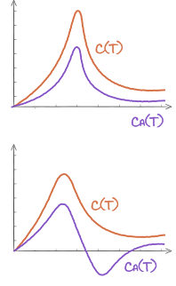
<figcaption class="paper-figure-caption"><b>Fig 1.</b> FIG. 1. Anomalous heat capacity meets entanglement. At thermal equilibrium, (i) the global heat capacity C(T) (orange curve) of a noninteracting bipartite system is the sum of its local heat capacities, whereas (ii) in the presence of interactions, C(T) need not to be equal to the sum of the local contributions. Although the global heat ca- pacity remains nonnegative, a local heat capacity can become anoma- lous, i.e., negative, as illustrated by CA(T) (purple curve). Here, we investigate when such anomalous local thermal responses are con- nected to entanglement.</figcaption>
</figure>
<figure class="paper-figure-card">
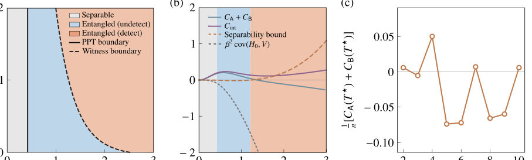
<figcaption class="paper-figure-caption"><b>Fig 2.</b> FIG. 2. Thermodynamic entanglement detection in a spin chain. (a) Detection regions for the two-spin model as functions of βh and D/h, with J/h = 1. The solid curve marks the PPT boundary [19, 20], while the dashed curve marks the violation threshold of the separability bound in Eq. (7). The gray region is separable, the blue region is NPT-entangled but not detected by the thermodynamic witness, and the orange region contains states detected by the witness. (b) heat capacity formulation for D/h = J/h = 1. The local response CA(T) + CB(T) crosses the separability bound before their sum becomes negative. The covariance contribution β2 covβ(H0, Hint) drives the suppression of the local...</figcaption>
</figure>
<figure class="paper-figure-card">
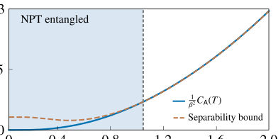
<figcaption class="paper-figure-caption"><b>Fig 3.</b> FIG. 3. Local heat capacity and separability bound. Entanglement is detected when the local heat capacity reaches the right-hand side of Eq. (12). The shaded region indicates the NPT-entangled re- gion [25, 26], given by states satisfying varβ(pA + pB) varβ(xA −xB) &lt; 1. The figure shows that violation of the bound in Eq. (12) detects en- tanglement and that entanglement constrains the local heat capacity even in the absence of anomalies. The parameter value is χ/ω = 1.5.</figcaption>
</figure>
</div>

<p><strong>Summary.</strong> This work establishes a quantitative link between quantum entanglement and the local heat capacity of interacting quantum systems. By deriving a separability bound based on energy fluctuations, the authors show that anomalous local heat capacities can serve as a thermodynamic witness for quantum correlations. This offers a powerful, general tool for characterizing quantum states using measurable thermal properties.</p>
<p><strong>Why it may be interesting.</strong> It provides a novel, model-independent thermodynamic diagnostic tool—the local heat capacity bound—to detect quantum entanglement, bridging concepts from quantum information theory and classical thermodynamics.</p>
<details>
<summary>Detailed structure</summary>
<p><strong>Main problem.</strong> The paper investigates how quantum entanglement at equilibrium influences the local heat capacity of interacting quantum systems, particularly focusing on the occurrence of anomalous (negative) heat capacities.</p>
<p><strong>Main result.</strong> A model-independent separability bound is derived connecting local heat capacity fluctuations to entanglement, showing that violations of this bound detect quantum correlations.</p>
<p><strong>Method.</strong> The authors use thermodynamic identities relating heat capacity to covariance and variance, deriving separability bounds based on local uncertainty relations for the system's energy operators.</p>
<p><strong>Model / system.</strong> The study analyzes bipartite interacting quantum systems, exemplified by nearest neighbour spin-1/2 chains, coupled quantum harmonic oscillators (QHOs), and general Hamiltonians $H = H_A + H_B + H_{	ext{int}}$.</p>
<p><strong>Key observables.</strong> Local Heat Capacity ($C_X(T)$), Global Heat Capacity ($C(T)$), Mutual Information, and the separability bound derived from energy fluctuations.</p>
<p><strong>Important parameters / regimes.</strong> Temperature ($T$) or inverse temperature ($eta$), interaction strength ($J, \chi$), and the nature of the coupling ($H_{	ext{int}}$).</p>
<p><strong>Assumptions / limitations.</strong> The analysis is primarily restricted to equilibrium states ($
ho_eta$) and bipartite systems, although the derived bounds are claimed to be model-independent.</p>
<p><strong>Figures summary.</strong> Figures illustrate that local heat capacities can be anomalous in interacting systems, and they compare entanglement detection using the derived heat capacity bound against other criteria like the PPT boundary.</p>
<p><strong>Paper structure.</strong> The paper develops the general framework by defining local heat capacity and deriving its decomposition. It then establishes the separability bound using fluctuation relations, applying this bound to specific models like spin chains and QHOs to demonstrate the connection between entanglement and thermodynamic anomalies.</p>
</details>
<details>
<summary>Abstract</summary>
<p>The heat capacity of a system quantifies how it energetically responds to changes in temperature at equilibrium. Whilst this quantity is positive and even additive for non-interacting systems, self-gravitating systems such as stars or subsystems of strongly interacting quantum systems are known to have negative or anomalous specific heat capacities. In this work, we investigate how the presence of entanglement at equilibrium can influence how an interacting system responds energetically to changes in temperature. We examine the local heat capacity of interacting quantum systems providing an analytical understanding for when anomalies occur. Most interestingly, we find a connection between local heat capacity anomalies and entanglement by deriving a separability bound based on the fluctuations of local and interaction energies. We illustrate our results with two examples (i) a nearest neighbour spin-1/2 chain and (ii) two coupled quantum harmonic oscillators. Lastly, we provide an information-theoretic formula connecting mutual information and athermality to the non-additivity of the heat capacity. Our results provide model-independent thermodynamic entanglement detection bounds and insight into the relationship between quantum correlations and the heat capacity of quantum systems.</p>
</details>
<p><sub><a href="#top">↑ back to top</a></sub></p>

<p><a id="paper-2608.21733"></a></p>
<h3 id="architectural-scaling-tradeoffs-in-modular-3d-bosonic-quantum-processors"><a href="http://arxiv.org/abs/2608.21733v1">Architectural scaling tradeoffs in modular 3D bosonic quantum processors</a></h3>
<p><strong>Authors:</strong> Shaojiang Zhu, Ugur Alyanak, Tanay Roy, Alessandro Reineri, Andy C. Y. Li, Taeyoon Kim, Srivatsan Chakram, Akshay Murthy, Anna Grassellino, Alexander Romanenko<br>
<strong>Type:</strong> theory · <strong>Category:</strong> quantum information and computing · <strong>PDF:</strong> <a href="https://arxiv.org/pdf/2608.21733v1">https://arxiv.org/pdf/2608.21733v1</a><br>
<strong>Analysis basis:</strong> full PDF text, analyzed in chunks
<strong>Topic relevance:</strong> <code>analog quantum simulation</code> <strong>1/5</strong></p>
<div class="figure-strip-hint">↔ Scroll figures horizontally</div>
<div class="paper-figures-scroll">
<figure class="paper-figure-card">
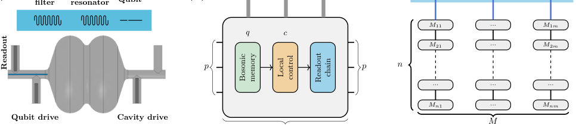
<figcaption class="paper-figure-caption"><b>Fig 1.</b> FIG. 1. Physical-to-architectural mapping for a modular bosonic QPU built from TBMs. (a) Physical schematic of a TBM comprising an two-cell elliptical SRF cavity, ancillary transmon-based control and readout components, and external drive and readout interfaces. (b) Graph-level abstraction of one TBM, with local memory, control, and readout resources grouped into a module vertex. (c) Example of a hybrid communication graph containing M linear clusters of n modules.</figcaption>
</figure>
<figure class="paper-figure-card">
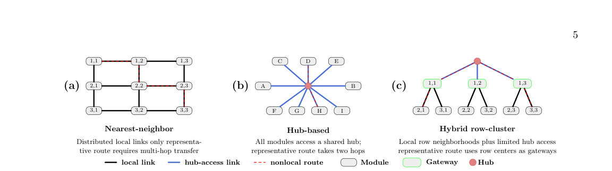
<figcaption class="paper-figure-caption"><b>Fig 2.</b> FIG. 2. Comparison of three interconnect topologies for the same bosonic processor with 9 computational modules. (a) Nearest- neighbor grid with only local links; a representative nonlocal route requires multiple hops. (b) Hub-based architecture with a central hub connecting to all modules; the representative route uses two module-hub links. (c) hybrid row-cluster architecture that retains local row-chain connectivity while designating each row-center module as a gateway to the central hub.</figcaption>
</figure>
<figure class="paper-figure-card">
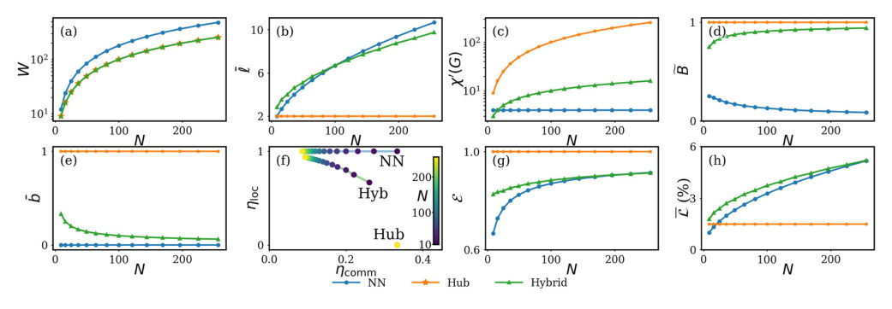
<figcaption class="paper-figure-caption"><b>Fig 3.</b> FIG. 3. Architecture-level scaling comparison for the nearest-neighbor (NN), hub, and balanced hybrid interconnects. (a) Link count W, characterizing the total hardware-connectivity requirement. (b) Mean shortest-path distance ¯ℓbetween computa- tional modules, setting the baseline number of transfer steps required for communication. (c) Link-conflict scheduling depth C = χ′(G) under exclusive-endpoint activation, for which links sharing a module or routing resource cannot operate simul- taneously. (d) Normalized maximum shortest-path betweenness eB, characterizing the concentration of shortest-path traffic through intermediate vertices. (e) Normalized shared-resource burden ¯b = ∆r/N,...</figcaption>
</figure>
<figure class="paper-figure-card">
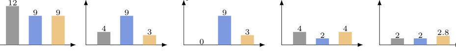
<figcaption class="paper-figure-caption"><b>Fig 4.</b> FIG. 4. Topological proxy comparison for three 3 × 3 modular interconnects: nearest-neighbor (NN), global hub, and hybrid row-cluster. Panels show total number of links W, maximum graph degree ∆max, shared-hub burden ∆I, worst-case module- to-module path length ℓmax, and mean path length ¯ℓ.</figcaption>
</figure>
</div>

<p><strong>Summary.</strong> This work proposes a comprehensive graph-theoretic framework to evaluate the scaling tradeoffs in modular 3D bosonic quantum processors. By analyzing different interconnect topologies, the authors map how various hardware costs, such as wiring and communication distance, are redistributed as the system size increases. This provides a systematic guide for the hardware co-design of future large-scale quantum computers.</p>
<p><strong>Why it may be interesting.</strong> It provides a crucial, quantitative, and systematic methodology for assessing the physical feasibility and scaling limits of large-scale quantum hardware architectures, which is vital for experimental quantum information scientists.</p>
<details>
<summary>Detailed structure</summary>
<p><strong>Main problem.</strong> The paper analyzes the architectural scaling tradeoffs for building large, modular three-dimensional (3D) bosonic quantum processors.</p>
<p><strong>Main result.</strong> It develops a systematic framework showing that scaling costs (like wiring and communication distance) are redistributed across different topologies (nearest-neighbor, hub-based, hybrid), rather than having a single optimal solution.</p>
<p><strong>Method.</strong> The analysis uses hardware-motivated graph-theoretic measures to compare various interconnect topologies and quantify scaling costs.</p>
<p><strong>Model / system.</strong> The system is a modular QPU built from repeatable coupled-cavity modules (TBMs) connected by a structured inter-module communication graph.</p>
<p><strong>Key observables.</strong> Interconnect count, communication distance ($ar{\ell}$), resource concentration, routing bottlenecks, and scheduling overhead.</p>
<p><strong>Important parameters / regimes.</strong> Local module parameters ($q, c, p, V_{cell}$), total number of modules ($N$), and specific graph metrics like edge count and module degree.</p>
<p><strong>Assumptions / limitations.</strong> Local module parameters are assumed not to scale with the total number of modules ($N$), and the analysis uses graph proxies rather than specifying coupling strengths or fidelities.</p>
<p><strong>Figures summary.</strong> Figures illustrate the physical-to-architectural mapping of the TBM and compare the structural differences between nearest-neighbor, hub-based, and hybrid topologies for a small number of modules.</p>
<p><strong>Paper structure.</strong> The paper progresses from defining the physical TBM unit to abstracting the system as a communication graph, comparing three major interconnect strategies, and finally providing a framework for systematic cost evaluation.</p>
</details>
<details>
<summary>Abstract</summary>
<p>We propose a modular three-dimensional bosonic quantum processor built from repeatable coupled-cavity modules linked by configurable interconnect networks. Using hardware-motivated graph-theoretic measures, we compare nearest-neighbor, hub-based, and hybrid architectures in terms of interconnect count, communication distance, resource concentration, and implementation complexity. Rather than identifying a universally optimal topology, our analysis shows how these architectures redistribute the costs of scaling, including wiring and port requirements, nonlocal communication distance, exposure to shared resources, routing bottlenecks, and scheduling overhead. Case studies of a \(3\times3\) processor and a larger hierarchical architecture further distinguish finite-size performance from asymptotic scaling. The resulting framework provides a systematic basis for evaluating modular three-dimensional bosonic processors and for identifying the device-level parameters required for quantitative hardware design.</p>
</details>
<p><sub><a href="#top">↑ back to top</a></sub></p>

<p><a id="paper-2608.22256"></a></p>
<h3 id="coordinate-transformations-and-matter-waves-cloaking"><a href="http://arxiv.org/abs/2608.22256v1">Coordinate transformations and matter waves cloaking</a></h3>
<p><strong>Authors:</strong> Reza G. Mohammadi, Ali G. Moghaddam, Ramin Mohammadkhani<br>
<strong>Type:</strong> theory · <strong>Category:</strong> other · <strong>PDF:</strong> <a href="https://arxiv.org/pdf/2608.22256v1">https://arxiv.org/pdf/2608.22256v1</a><br>
<strong>Analysis basis:</strong> full PDF text, analyzed in chunks
<strong>Topic relevance:</strong> <code>analog quantum simulation</code> <strong>1/5</strong></p>
<div class="figure-strip-hint">↔ Scroll figures horizontally</div>
<div class="paper-figures-scroll">
<figure class="paper-figure-card">
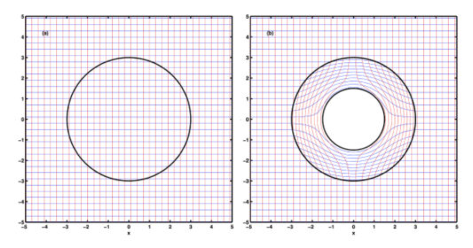
<figcaption class="paper-figure-caption"><b>Fig 1.</b> FIG. 1. (Color online) Application of coordinate transformation to a spherical region subjected to a plane-wave electron propagating in the x-direction. As shown in the figures, the spatial transformation takes place in the x −y plane. Figure (a) shows the closed region (area inside the circle) in Cartesian coordinates, with vacuum region for both inside and outside regions of it. The rays of electron or generally matter waves (indicated by blue horizontal lines) and the wave fronts (shown by red perpendicular lines) of the incident propagating plane-wave are also shown. Figure (b) shows the transformed region according to the transformation given by Eq. (8) with b = 2a and the material...</figcaption>
</figure>
<figure class="paper-figure-card">
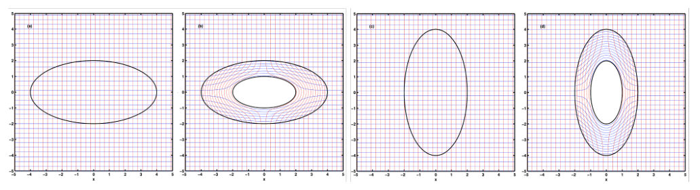
<figcaption class="paper-figure-caption"><b>Fig 2.</b> FIG. 2. (Color online) Similar to Fig. 1 but for the ellipsoidal cloaks. Figure (a) and (c) show the closed region (area inside the horizontal and vertical ellipsoids) in Cartesian coordinates. Figures (b) and (d) show the transformed region according to the transformation Eq. (20) with b = 2a and the material properties in the cloaking region determined by Eqs. (24). The matter wave rays and wave fronts transform accordingly.</figcaption>
</figure>
</div>

<p><strong>Summary.</strong> This paper develops a coordinate transformation method to design 'invisibility cloaks' for matter waves. By transforming the Schrödinger equation, the authors derive the necessary spatially varying mass tensors and potentials required to guide quantum waves around an object without scattering. This technique is successfully applied to spherical, cylindrical, and ellipsoidal geometries.</p>
<p><strong>Why it may be interesting.</strong> This work provides a rigorous theoretical framework for designing metamaterials for quantum particles, which is highly relevant to quantum optics and the engineering of wave propagation in structured media.</p>
<details>
<summary>Detailed structure</summary>
<p><strong>Main problem.</strong> The paper addresses the theoretical challenge of controlling wave propagation, specifically achieving invisibility cloaking, for matter waves.</p>
<p><strong>Main result.</strong> The authors derive the exact spatially varying mass tensor and potential required to cloak matter waves using coordinate transformations for spherical, cylindrical, and ellipsoidal geometries.</p>
<p><strong>Method.</strong> The methodology involves applying coordinate transformations to the Schrödinger equation with a position-dependent mass tensor, allowing the determination of the required material parameters in the physical space.</p>
<p><strong>Model / system.</strong> The system modeled is matter waves governed by the time-independent Schrödinger equation, which is adapted to include a position-dependent mass tensor and potential, $\left(-rac{\hbar^2}{2} 
abla \cdot (\hat{m}^{-1} 
abla) + V
ight) \psi = E\psi$.</p>
<p><strong>Key observables.</strong> The effective mass tensor components ($\mathbf{m}$) and the effective potential ($V$) are the key derived observables.</p>
<p><strong>Important parameters / regimes.</strong> The geometry is defined by parameters like the inner radius ($a$) and outer radius ($b$) for the cloaking region.</p>
<p><strong>Assumptions / limitations.</strong> The analysis assumes the wave equation remains covariant under coordinate transformations and focuses on orthogonal bases where the metric tensor is diagonal.</p>
<p><strong>Figures summary.</strong> Figure 1 illustrates the mapping of a spherical region using coordinate transformation, while Figure 2 shows the mapping for ellipsoidal cloaks, comparing the physical region to the transformed cloaking region.</p>
<p><strong>Paper structure.</strong> The paper establishes the theoretical framework using covariant forms of the Schrödinger equation, derives the transformation relations, and then applies this framework sequentially to derive specific material parameters for spherical, cylindrical, and ellipsoidal cloaks.</p>
</details>
<details>
<summary>Abstract</summary>
<p>Transformation method provides an efficient tool to control wave propagation inside the materials. Using the coordinate transformation approach, we study invisibility cloaks with sphere, cylinder and ellipsoid structures for electronic waves propagation. The underlying physics behind this investigation is the fact that the Schrödinger equation with position-dependent mass tensor and potentials has a covariant form that follows the coordinate transformation. Using this technique we obtain the exact spatial form of the mass tensor and potentials for a variety of cloaks with different shapes.</p>
</details>
<p><sub><a href="#top">↑ back to top</a></sub></p>

<p><a id="paper-2608.22547"></a></p>
<h3 id="fractality-of-the-schrodinger-density-for-rough-data"><a href="http://arxiv.org/abs/2608.22547v1">Fractality of the Schrödinger Density for Rough Data</a></h3>
<p><strong>Authors:</strong> Masoud Ataei<br>
<strong>Type:</strong> theory · <strong>Category:</strong> other · <strong>PDF:</strong> <a href="https://arxiv.org/pdf/2608.22547v1">https://arxiv.org/pdf/2608.22547v1</a><br>
<strong>Analysis basis:</strong> full PDF text, analyzed in chunks
<strong>Topic relevance:</strong> <code>interference shaping light</code> <strong>1/5</strong></p>
<div class="figure-strip-hint">↔ Scroll figures horizontally</div>
<div class="paper-figures-scroll">
<figure class="paper-figure-card">
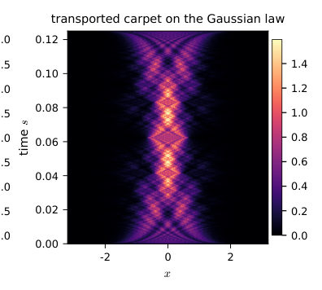
<figcaption class="paper-figure-caption"><b>Fig 1.</b> Fig. 1 One observable period of the carpet flow, computed from the series (9). Left: the canonical carpet, the kernel ws over rank z and rescaled time s ∈[0, 1</figcaption>
</figure>
<figure class="paper-figure-card">
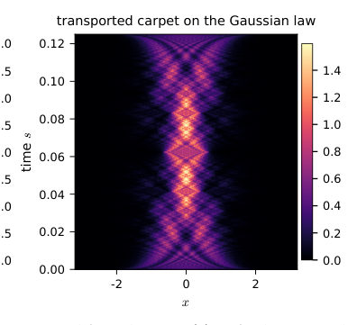
<figcaption class="paper-figure-caption"><b>Fig 2.</b> Figure 1 displays one observable period of the flow, on rank space and transported onto the Gaussian law: the palindrome of the clock, the bright revivals of rational times, and the fractal interstices between them are visible to the eye. At rational times the carpet flow revives into finitely many quantile cells. Theorem 2 (Quantile mosaics). Let s = p/q in lowest terms. The phase χ(n) = e−2πin2p/q is periodic in n with period q, and its discrete Fourier expansion yields the revival</figcaption>
</figure>
<figure class="paper-figure-card">
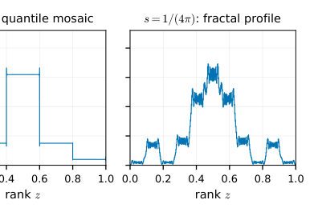
<figcaption class="paper-figure-caption"><b>Fig 3.</b> Fig. 2 Three sections of the carpet, computed from the truncated series (9). Left: at s = 1 16 the density is the quartile blackout, vanishing identically on the outer quartiles and equal to 2 on the interquartile range. Center: the five-cell quantile mosaic at s = 1 20 ; the mosaic lives on the fifths rather than the twentieths, the Gauss coefficients with odd r vanishing for q ≡0 mod 4, so the cell count of Theorem 2 is not sharp. Right: at the generic time s = 1/(4π) the section is a fractal profile of upper box dimension 3</figcaption>
</figure>
<figure class="paper-figure-card">
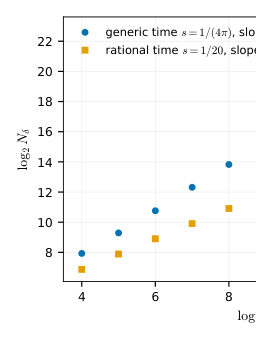
<figcaption class="paper-figure-caption"><b>Fig 4.</b> Fig. 3 Box-counting regression on sections of the carpet: the number Nδ of δ-boxes meeting the graph of ws, over dyadic scales δ = 2−4, . . . , 2−14, computed from the series (9). At the generic time s = 1/(4π) the fitted slope over the five finest octaves is 1.530, matching the dimension 3</figcaption>
</figure>
<figure class="paper-figure-card">
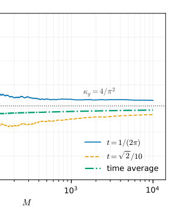
<figcaption class="paper-figure-caption"><b>Fig 5.</b> Fig. 4 The strong law for the square-wave datum on the torus: the normalized critical mass YM(t)/ log M for two generic times and in time average, against the limit κg = 4/π2 ≈0.405 of the law (23). The deviation from the limit is of order 1/ log M: the mass itself is κg log M + O(1) with bounded mean-square fluctuations, by the variance bound of the theorem, and the division by log M makes the O(1) term visible at this range of M.</figcaption>
</figure>
</div>

<p><strong>Summary.</strong> This theoretical paper rigorously proves that the intensity density of the free Schrödinger evolution for rough data exhibits universal fractal properties. It establishes the upper box dimension of this density to be exactly 3/2 and quantifies the logarithmic divergence of the critical Sobolev mass. The findings connect fundamental concepts of wave dynamics, fractal geometry, and spectral analysis.</p>
<p><strong>Why it may be interesting.</strong> This work provides deep mathematical insights into the scaling and fractal geometry of quantum wave packet dynamics, connecting concepts from wave propagation (Talbot effect) to rigorous fractal analysis.</p>
<details>
<summary>Detailed structure</summary>
<p><strong>Main problem.</strong> The paper determines the general fractality of the intensity (density) of the free Schrödinger evolution for rough periodic data, extending previous results limited to simple step functions.</p>
<p><strong>Main result.</strong> The density's graph is proven to be fractal at almost every time, possessing an upper box dimension of exactly three halves (3/2). Furthermore, the critical Sobolev mass diverges logarithmically, with a rate determined by Wiener's jump statistic.</p>
<p><strong>Method.</strong> The analysis employs advanced mathematical tools including the derangetropy operator, Fourier mode expansions, and probabilistic methods like the Borel–Cantelli lemma to analyze time-averaged properties.</p>
<p><strong>Model / system.</strong> The model is the free Schrödinger evolution on the torus, applied to the observable intensity (density) derived from rough periodic data, relating to the Talbot effect in wave optics.</p>
<p><strong>Key observables.</strong> The density of the evolving field (intensity, $|u|^2$), the upper box dimension of the density's graph, and the critical Sobolev mass.</p>
<p><strong>Important parameters / regimes.</strong> The jump content of the initial data (Wiener's jump statistic), time $t$, and the spectral growth rate.</p>
<p><strong>Assumptions / limitations.</strong> The analysis assumes the initial data is real, has bounded variation, and contains at least one jump. Some results rely on conjectures regarding almost-sure upgrades of mean laws.</p>
<p><strong>Paper structure.</strong> The paper progresses by establishing the general fractal nature of the density, analyzing its time-averaged properties (e.g., time-averaged carpet and divergence), and calculating the asymptotic behavior of the critical mass using spectral representations.</p>
</details>
<details>
<summary>Abstract</summary>
<p>The observable of the Talbot effect is the intensity behind the grating: the density of the evolving field, not the field itself. Its fractality was previously known only for step data with rational jumps. We prove the general case. For arbitrary real data of bounded variation with at least one jump, the density of the free Schrödinger evolution on the torus is fractal at almost every time, with graph of upper box dimension exactly three halves. Its critical Sobolev mass diverges logarithmically, at a rate given in closed form by Wiener's jump statistic of the datum and independent of the positions and phases of the jumps. The same rate is halved along time traces and doubled for the Airy flow, so the critical mass probes the dispersion relation. Transported by the rank calculus of derangetropy operators, the theory equips every probability law with a quantum carpet: Gauss-sum revivals on quantile cells at rational times, a universal fractal at almost every other. The spectral growth rate of a single measured intensity profile returns the jump content of the grating, a prediction open to test in optical and matter-wave interferometry.</p>
</details>
<p><sub><a href="#top">↑ back to top</a></sub></p>

<p><a id="paper-2608.22535"></a></p>
<h3 id="hydrogen-molecular-ion-and-molecule-in-classical-electrodynamics-with-classical-zero-point-radiation"><a href="http://arxiv.org/abs/2608.22535v1">Hydrogen Molecular Ion and Molecule in Classical Electrodynamics with Classical Zero-Point Radiation</a></h3>
<p><strong>Authors:</strong> Timothy H. Boyer<br>
<strong>Type:</strong> theory · <strong>Category:</strong> other · <strong>PDF:</strong> <a href="https://arxiv.org/pdf/2608.22535v1">https://arxiv.org/pdf/2608.22535v1</a><br>
<strong>Analysis basis:</strong> full PDF text, analyzed in chunks
<strong>Topic relevance:</strong> <code>Keldysh / 2PI / non-Gaussian methods</code> <strong>1/5</strong></p>
<div class="figure-strip-hint">↔ Scroll figures horizontally</div>
<div class="paper-figures-scroll">
<figure class="paper-figure-card">

<figcaption class="paper-figure-caption"><b>Fig 1.</b> Low-resolution page preview, page 2</figcaption>
</figure>
<figure class="paper-figure-card">

<figcaption class="paper-figure-caption"><b>Fig 2.</b> Low-resolution page preview, page 3</figcaption>
</figure>
<figure class="paper-figure-card">

<figcaption class="paper-figure-caption"><b>Fig 3.</b> Low-resolution page preview, page 4</figcaption>
</figure>
<figure class="paper-figure-card">

<figcaption class="paper-figure-caption"><b>Fig 4.</b> Low-resolution page preview, page 5</figcaption>
</figure>
<figure class="paper-figure-card">

<figcaption class="paper-figure-caption"><b>Fig 5.</b> Low-resolution page preview, page 6</figcaption>
</figure>
</div>

<p><strong>Summary.</strong> This paper applies classical electrodynamics, including zero-point radiation, to calculate the binding energies of $   ext{H}_2^+$ and $   ext{H}_2$. It finds that the molecular ion is less bound than expected due to classical repulsive effects. The study provides quantitative estimates for binding energies and separations, offering a classical perspective on molecular stability.</p>
<p><strong>Why it may be interesting.</strong> This work applies classical electrodynamics to molecular bonding, providing a theoretical comparison to quantum results and exploring how zero-point fluctuations modify chemical binding energies, which is relevant to open quantum systems and molecular structure.</p>
<details>
<summary>Detailed structure</summary>
<p><strong>Main problem.</strong> The paper investigates the binding energies of the hydrogen molecular ion ($  ext{H}_2^+$) and the hydrogen molecule ($   ext{H}_2$) using a classical electrodynamics framework that incorporates classical zero-point radiation.</p>
<p><strong>Main result.</strong> Classically, the molecular ion ($  ext{H}_2^+$) is predicted to be less strongly bound than a single hydrogen atom, a result attributed to repulsive forces when considering the electron's resonant orbit.</p>
<p><strong>Method.</strong> The analysis uses approximate calculations based on classical electrodynamics, modeling the electron's motion as a resonant circular orbit while balancing energy loss from radiation against zero-point energy gain.</p>
<p><strong>Model / system.</strong> The system involves the $   ext{H}_2^+$ and $   ext{H}_2$ molecules. The model treats the protons as stationary and analyzes the electron's dynamics using nonrelativistic equations of motion derived from classical electrodynamics.</p>
<p><strong>Key observables.</strong> Binding energy of $    ext{H}_2^+$ ($\approx 2.1 	ext{ eV}$) and $ ext{H}_2$ ($\approx 4.6 	ext{ eV}$), and the equilibrium proton separation ($0.916 	ext{ a}_0$ for $   ext{H}_2^+$).</p>
<p><strong>Important parameters / regimes.</strong> The zero-point radiation acts as a key energy source/sink; the analysis relies on the assumption of a resonant circular orbit for the electron.</p>
<p><strong>Assumptions / limitations.</strong> The calculation is approximate, requiring a full computer simulation for accuracy. Key assumptions include treating the protons as much heavier than the electron and assuming the electron follows a resonant circular orbit.</p>
<p><strong>Figures summary.</strong> Not specified.</p>
<p><strong>Paper structure.</strong> The paper develops the classical equations of motion for the electron in $ ext{H}_2^+$ (using circular orbit assumptions) to find equilibrium parameters, then extends the analysis to $   ext{H}_2$ to compare binding energies.</p>
</details>
<details>
<summary>Abstract</summary>
<p>The hydrogen molecular ion and the hydrogen molecule are treated in an approximate calculation based on classical electrodynamics which includes classical zero-point radiation. It is found within the classical theory that a molecular ion is less-well bound than a hydrogen atom plus a distant proton. The smaller binding energy is explained due to the repulsive nature of the force between the proton and the atom when considering the most natural resonant orbit of the electron. The approximate classical electromagnetic calculation gives a binding energy of $2.1eV$ and a proton separation of $0.916A^{o}$ for the hydrogen molecular ion. The hydrogen molecule is formed by adding a single additional electron to the ion. The electrostatic attraction of the electron to the ion gives a binding energy of $4.6eV$ and a inter-proton separation of $0.6A^{o}$ for the hydrogen molecule in this classical electromagnetic approximation.</p>
</details>
<p><sub><a href="#top">↑ back to top</a></sub></p>

<p><a id="paper-2608.22925"></a></p>
<h3 id="importance-reweighted-fock-space-variational-monte-carlo"><a href="http://arxiv.org/abs/2608.22925v1">Importance-Reweighted Fock-Space Variational Monte Carlo</a></h3>
<p><strong>Authors:</strong> Zheng Che<br>
<strong>Type:</strong> theory · <strong>Category:</strong> numerical methods · <strong>PDF:</strong> <a href="https://arxiv.org/pdf/2608.22925v1">https://arxiv.org/pdf/2608.22925v1</a><br>
<strong>Analysis basis:</strong> full PDF text, analyzed in chunks
<strong>Topic relevance:</strong> <code>methods for driven-dissipative</code> <strong>1/5</strong></p>
<div class="figure-strip-hint">↔ Scroll figures horizontally</div>
<div class="paper-figures-scroll">
<figure class="paper-figure-card">

<figcaption class="paper-figure-caption"><b>Fig 1.</b> Figure 1: Sampling and optimization over the first 1000 iterations for equilibrium H2O (top) and Fe2S2 (bottom). Born uses the Born distribution with a symmetric 50:50 single/double proposal; Tempered uses adaptive 𝛼with the same proposal; the three IR curves use the Hamiltonian-guided construction with (𝛼, 𝛽) = (2, 0.5), adaptive 𝛼with 𝛽= 0, and adaptive 𝛼with 𝛽= 0.5, respectively. Curves are medians over 10-iteration blocks. Left: |𝐸−𝐸ref| versus cumulative wall time, with FCI and SA-DMRG references for H2O and Fe2S2. Center: sampled local-energy variance, with values below 10−4 𝐸2 h shown at the plotting floor. Right: Metropolis–Hastings acceptance rate of the Markov chain.</figcaption>
</figure>
<figure class="paper-figure-card">

<figcaption class="paper-figure-caption"><b>Fig 2.</b> Figure 2: Variational energy benchmarks. (a) Errors relative to FCI for all-electron (10𝑒, 24𝑜) H2O/cc-pVDZ, with UCCSDT and MRCISD for comparison.51 (b) Energies per atom for half-filled 36-site STO-6G chain, 6 × 6 square, and 3 × 3 × 4 cubic lattices, compared with SA-DMRG at 𝑀= 100–1600. (c) Errors for Fe2S2 (30𝑒, 20𝑜) and Fe4S4 (54𝑒, 36𝑜). References are −116.605609 𝐸h (𝑀= 12000 SA-DMRG) and −327.245342 𝐸h (extrapolated BS1 SA-DMRG), respectively. Filled DMRG points are from Ref.52 ; the open square is from Ref.47</figcaption>
</figure>
<figure class="paper-figure-card">

<figcaption class="paper-figure-caption"><b>Fig 3.</b> Figure 3: Electronic-correlation diagnostics for the optimized IR-FS-VMC states. (a) Natural occupations for H2O at 𝑅/𝑅e = 1, 2, and 3, the three H36 lattices, and the iron–sulfur clusters; the dashed line marks 𝑛𝑖= 1. (b) Staggered H36 spin correlations (−1)𝑑⟨𝑺𝑖⋅𝑺𝑗⟩, averaged over orbital pairs at Manhattan distance 𝑑. (c) Fe-site correlations ⟨𝑺𝐼⋅𝑺𝐽⟩, obtained by summing over the five Fe 3𝑑orbitals on each site; diagonal entries are ⟨𝑺2 𝐼⟩.</figcaption>
</figure>
</div>

<p><strong>Summary.</strong> This work introduces Importance-Reweighted Fock-Space Variational Monte Carlo (IR-FS-VMC) to overcome sampling limitations in electronic structure calculations. By redesigning the Monte Carlo evaluation using importance reweighting, the method accurately computes variational quantities for systems with varied electronic correlations. The protocol is shown to be robust across molecules and magnetic clusters, validating its use in challenging quantum chemistry regimes.</p>
<p><strong>Why it may be interesting.</strong> The development of robust stochastic estimators that decouple the sampling process from the local energy fluctuations is crucial for applying VMC to complex, strongly correlated systems where standard sampling methods fail or become unstable.</p>
<details>
<summary>Detailed structure</summary>
<p><strong>Main problem.</strong> The paper addresses the challenge of accurately evaluating variational quantities (energy, gradient, SR matrix) in Fock-space Variational Monte Carlo (FS-VMC) when the Born distributions vary significantly between electronic systems.</p>
<p><strong>Main result.</strong> The proposed Importance-Reweighted FS-VMC (IR-FS-VMC) protocol successfully maintains the variational objective while robustly estimating necessary expectations across diverse electronic-correlation regimes.</p>
<p><strong>Method.</strong> It redesigns the Monte Carlo evaluation by using an auxiliary distribution and a Hamiltonian-guided proposal for the Markov chain, followed by self-normalized importance reweighting to recover the required Born-distribution expectations.</p>
<p><strong>Model / system.</strong> The method is applied to ab initio electronic Hamiltonians in a finite orbital basis, tested on molecular systems like H2O, hydrogen lattices, and strongly correlated iron-sulfur clusters (Fe2S2, Fe4S4).</p>
<p><strong>Key observables.</strong> Variational energy, energy gradient, Stochastic Reconfiguration (SR) matrix, Markov-chain acceptance rate, and local-energy variance.</p>
<p><strong>Important parameters / regimes.</strong> The method uses tunable parameters like the exponent $\alpha$ (controlling the auxiliary distribution) and thresholds $\epsilon_1, \epsilon_2$ for Hamiltonian decomposition.</p>
<p><strong>Assumptions / limitations.</strong> The self-normalized estimators are consistent but biased at finite sample size; the method assumes the variational objective remains unchanged despite the redesign of the Monte Carlo evaluation.</p>
<p><strong>Figures summary.</strong> Figures compare stochastic diagnostics (acceptance rate, local-energy variance) and final variational energies against established methods across bond stretching and lattice structures, showing the protocol's stability.</p>
<p><strong>Paper structure.</strong> The paper introduces the IR-FS-VMC formalism, details the Hamiltonian decomposition and sampling protocols, and validates the method by applying it to a suite of chemically and electronically diverse systems, comparing results against high-accuracy benchmarks.</p>
</details>
<details>
<summary>Abstract</summary>
<p>Fock-space variational Monte Carlo (FS-VMC) evaluates variational quantities by stochastic sampling over discrete many-body configurations. For ab initio electronic Hamiltonians, Born distributions can differ markedly between systems, and a Markov chain that mixes well need not yield low-variance estimators. We introduce importance-reweighted FS-VMC (IR-FS-VMC), which leaves the variational objective unchanged while redesigning its Monte Carlo evaluation. An auxiliary distribution and Hamiltonian-guided proposal define the Markov chain, while an evaluation Markov kernel defines an analytically tractable evaluation distribution. Self-normalized importance reweighting then recovers the Born-distribution expectations entering the energy, gradient, and stochastic reconfiguration (SR) matrix. Controlled comparisons on equilibrium H2O and Fe2S2 separate Markov-chain acceptance from local-energy fluctuations and optimization behavior. Using one production protocol, calculations for H2O dissociation, 36-site hydrogen lattices, and Fe2S2 and Fe4S4 active spaces yield accurate variational energies across different Born distributions and electronic-correlation regimes. Together, these results show that the production protocol can support robust FS-VMC optimization across the electronic-structure regimes studied here.</p>
</details>
<p><sub><a href="#top">↑ back to top</a></sub></p>

<p><a id="paper-2608.21765"></a></p>
<h3 id="markov-constraints-enhance-identifiability-in-quantum-shadow-inversion"><a href="http://arxiv.org/abs/2608.21765v1">Markov Constraints Enhance Identifiability in Quantum Shadow Inversion</a></h3>
<p><strong>Authors:</strong> Zhixing Chen, Lin Chen<br>
<strong>Type:</strong> theory · <strong>Category:</strong> quantum information and computing · <strong>PDF:</strong> <a href="https://arxiv.org/pdf/2608.21765v1">https://arxiv.org/pdf/2608.21765v1</a><br>
<strong>Analysis basis:</strong> full PDF text, analyzed in chunks
<strong>Topic relevance:</strong> <code>quantum measurements</code> <strong>1/5</strong></p>
<div class="figure-strip-hint">↔ Scroll figures horizontally</div>
<div class="paper-figures-scroll">
<figure class="paper-figure-card">

<figcaption class="paper-figure-caption"><b>Fig 1.</b> Low-resolution page preview, page 2</figcaption>
</figure>
<figure class="paper-figure-card">

<figcaption class="paper-figure-caption"><b>Fig 2.</b> Low-resolution page preview, page 3</figcaption>
</figure>
<figure class="paper-figure-card">

<figcaption class="paper-figure-caption"><b>Fig 3.</b> Low-resolution page preview, page 4</figcaption>
</figure>
<figure class="paper-figure-card">

<figcaption class="paper-figure-caption"><b>Fig 4.</b> Low-resolution page preview, page 5</figcaption>
</figure>
<figure class="paper-figure-card">

<figcaption class="paper-figure-caption"><b>Fig 5.</b> Low-resolution page preview, page 6</figcaption>
</figure>
</div>

<p><strong>Summary.</strong> This paper investigates quantum shadow inversion for four-partite systems, where the goal is to determine global unitary evolution from limited endpoint measurements. The authors demonstrate that incorporating Markovian locality constraints forces the system's inherent ambiguity (the centralizer) to shrink, thereby providing a structural enhancement to the process's identifiability.</p>
<p><strong>Why it may be interesting.</strong> This work provides a rigorous structural mechanism showing how physical locality constraints (Markovianity) can act as a powerful resource to resolve ambiguities inherent in quantum process tomography or state reconstruction tasks.</p>
<details>
<summary>Detailed structure</summary>
<p><strong>Main problem.</strong> The paper addresses quantum shadow inversion, which aims to reconstruct an unknown global unitary evolution from measurements involving only a fixed observable at the endpoints of a multi-partite quantum system.</p>
<p><strong>Main result.</strong> By imposing Markovian locality constraints, the inherent ambiguity in the shadow inversion process (described by the centralizer) is strictly reduced, enhancing the identifiability of the underlying unitary dynamics.</p>
<p><strong>Method.</strong> The authors use the framework of Markov-admissible supermaps and analyze the structure of the centralizer associated with the endpoint observable, comparing the full centralizer to the Markov-implementable centralizer.</p>
<p><strong>Model / system.</strong> The study focuses on four-partite quantum systems (A-B-C-D) arranged linearly, whose evolution is governed by an unknown global unitary $U_{ABCD}$. The analysis is formalized using supermaps and Choi operators.</p>
<p><strong>Key observables.</strong> The primary observable is the endpoint observable $O_{AD}$, and the key diagnostic is the centralizer $C_{OAD} = \{V_{AD} : [V_{AD}, O_{AD}] = 0\}$, which quantifies the ambiguity.</p>
<p><strong>Important parameters / regimes.</strong> The system size (four parties) and the specific structure of the Markov constraint (endpoint-local refinement) are crucial parameters.</p>
<p><strong>Assumptions / limitations.</strong> The core assumption leading to the enhancement is the imposition of the endpoint-local Markov admissibility condition, which forces endpoint unitaries to factorize across the A|D bipartition.</p>
<p><strong>Figures summary.</strong> The notes do not provide a summary of figures, but mention schematic summaries (Table I) illustrating the progression from shadow inversion to Markov realization and centralizer ambiguity.</p>
<p><strong>Paper structure.</strong> The paper follows a logical progression: defining the shadow inversion problem using Markov-admissible supermaps, introducing the centralizer ambiguity, and then proving that imposing endpoint-local Markov admissibility strictly reduces this ambiguity via the factorization requirement.</p>
</details>
<details>
<summary>Abstract</summary>
<p>We study quantum shadow inversion under Markovian locality constraints for four-partite systems arranged along the chain $A$--$B$--$C$--$D$. The goal is to reproduce the expectation value of a fixed endpoint observable $O_{AD}$ after an unknown global unitary, without requiring full unitary inversion. We formulate the task using Markov-admissible supermaps and introduce the Markov-implementable centralizer to describe the remaining endpoint gauge freedom. We show that unrestricted endpoint post-processing is too broad, and impose an endpoint-local refinement. Under this condition, every implementable endpoint unitary must factorize across $A|D$, so the Markov constraint strictly reduces the centralizer-induced shadow ambiguity whenever the full centralizer contains non-product unitaries. This provides a structural mechanism by which Markov locality enhances identifiability in quantum shadow inversion.</p>
</details>
<p><sub><a href="#top">↑ back to top</a></sub></p>

<p><a id="paper-2608.21634"></a></p>
<h3 id="motional-degrees-of-freedom-in-network-hamiltonian-models"><a href="http://arxiv.org/abs/2608.21634v1">Motional Degrees of Freedom in Network Hamiltonian Models</a></h3>
<p><strong>Authors:</strong> Peng Huang, Elizabeth M. Diessner, Carter T. Butts<br>
<strong>Type:</strong> theory · <strong>Category:</strong> statistical mechanics · <strong>PDF:</strong> <a href="https://arxiv.org/pdf/2608.21634v1">https://arxiv.org/pdf/2608.21634v1</a><br>
<strong>Analysis basis:</strong> full PDF text, analyzed in chunks
<strong>Topic relevance:</strong> <code>analog quantum simulation</code> <strong>1/5</strong></p>
<div class="figure-strip-hint">↔ Scroll figures horizontally</div>
<div class="paper-figures-scroll">
<figure class="paper-figure-card">

<figcaption class="paper-figure-caption"><b>Fig 1.</b> FIG. 1. Network terms represent topological degrees of freedom of the aggregation graph, and are captured as parameters in the network Hamiltonian. A) Examples of structures contributing to terms used here on an arbitrary graph state, including edges (grey), 2-stars (purple), triangles (green), and chordless 4-lines (orange). A close-up of a 2-star shows one of the 6 2  2-stars centered on a single node; every pair of edges on the same node contributes a 2-star. B) First-order effects arise from bond vibrations between bound particles ‘a’ and ‘b’, indicated by a yellow arrow, contributing 2 df per edge (te(G)). C) Second-order effects arise from the angular oscillations (librations)...</figcaption>
</figure>
<figure class="paper-figure-card">

<figcaption class="paper-figure-caption"><b>Fig 2.</b> FIG. 3. Typical aggregation graphs at extreme low temperature for 2nd (A) and 3rd (B) order models. Nodes are shaded to show distinct components. Both models transition from minimally aggregated states at T = 0.25 to compact particles by T = 0.0625, but show different behavior at intermediate temperatures.</figcaption>
</figure>
<figure class="paper-figure-card">

<figcaption class="paper-figure-caption"><b>Fig 3.</b> FIG. 4. Phase behavior of 2nd (A) and 3rd (B) order models near the first low-temperature transition. Neither model generates triangulation above Tc, but adding a dihedral effect locally reverses the behavior of component count across the transition.</figcaption>
</figure>
<figure class="paper-figure-card">

<figcaption class="paper-figure-caption"><b>Fig 4.</b> FIG. 5. Aggregation kinetics trajectory for the second order model at T = 0.1; frames show states at 0 and 3125×2(0,1,2,3,4,5,6,7)</figcaption>
</figure>
<figure class="paper-figure-card">

<figcaption class="paper-figure-caption"><b>Fig 5.</b> FIG. 6. Log expected event times (relative to collision rate) for first passage from pure k-clique phases, by clique size, model order, and temperature. Cliques have little stability in low-order models, while high-order models selectively stabilize large cliques at low temperature.</figcaption>
</figure>
</div>

<p><strong>Summary.</strong> This work extends Network Hamiltonian Models by explicitly accounting for motional energy contributions arising from two-, three-, and four-body interactions. By incorporating these terms, the model predicts that particle aggregation at low temperatures favors the formation of small, dense, droplet-like clusters rather than extended gel phases. This demonstrates how neglected local dynamics can fundamentally change the predicted macroscopic phase behavior.</p>
<p><strong>Why it may be interesting.</strong> While focused on classical statistical mechanics, the methodology of coupling local energy constraints (motional terms) to global topological structure (the network) is relevant for understanding complex many-body dynamics in quantum systems where local fluctuations influence global phase transitions.</p>
<details>
<summary>Detailed structure</summary>
<p><strong>Main problem.</strong> The paper addresses how to incorporate the influence of unmodeled motional degrees of freedom into Network Hamiltonian Models (NHMs) used to describe particle aggregation.</p>
<p><strong>Main result.</strong> Incorporating three-body (libration) and four-body (dihedral) motional terms significantly alters the aggregation phase behavior at low temperatures, favoring the formation of small, droplet-like structures.</p>
<p><strong>Method.</strong> The authors derive and incorporate energy terms into the network Hamiltonian based on the assumption of time-scale separation between bond formation and molecular motion.</p>
<p><strong>Model / system.</strong> The model uses NHMs to describe aggregation, treating the system as a network where edges represent interactions. The Hamiltonian is augmented with terms representing vibrational, librational, and dihedral energy contributions.</p>
<p><strong>Key observables.</strong> Density, number of components, mean component size, and the stability/transition behavior of the system across different model orders.</p>
<p><strong>Important parameters / regimes.</strong> Temperature (T), and the order of the motional correction (2nd and 3rd order terms).</p>
<p><strong>Assumptions / limitations.</strong> The primary assumption is the time-scale separation between bond dynamics and molecular motion, allowing motional energy contributions to be approximated by equilibrium terms.</p>
<p><strong>Figures summary.</strong> Figures illustrate typical aggregation graphs at low temperatures for 2nd and 3rd order models, showing component changes, and plot phase behavior near the low-temperature transition.</p>
<p><strong>Paper structure.</strong> The paper builds from the standard NHM framework, introduces the theoretical basis for motional terms (2, 3, and 4-body), and then uses simulations to compare the resulting phase transitions and aggregation states across different model orders.</p>
</details>
<details>
<summary>Abstract</summary>
<p>Network Hamiltonian Models (NHMs) provide an efficient framework for modeling the aggregation of interacting particles (e.g., the condensation of proteins into gel-like, oligomeric, or fibrillar states), representing the system as a network whose edges represent bound interactions. Terms within the network Hamiltonian represent multi-body interactions governing aggregation behavior, and are specified via topological degrees of freedom. Because motional degrees of freedom are not explicitly represented within the NHM, their influence must be indirectly accounted for by introduction of corresponding terms to the Hamiltonian. Here, we describe specifications for terms representing motional degrees of freedom of two, three, and four-body interactions. We also consider the impact of these terms on the aggregation states of a minimal system governed only by a pairwise edge potential, showing that three and four-body interactions favor condensation of the system into small droplet-like structures at low temperature.</p>
</details>
<p><sub><a href="#top">↑ back to top</a></sub></p>

<p><a id="paper-2608.21842"></a></p>
<h3 id="noise-symmetry-optimization-of-quantum-error-corrected-metrology"><a href="http://arxiv.org/abs/2608.21842v1">Noise-Symmetry Optimization of Quantum Error-Corrected Metrology</a></h3>
<p><strong>Authors:</strong> Shuyun Su, Shengshi Pang<br>
<strong>Type:</strong> theory · <strong>Category:</strong> quantum information and computing · <strong>PDF:</strong> <a href="https://arxiv.org/pdf/2608.21842v1">https://arxiv.org/pdf/2608.21842v1</a><br>
<strong>Analysis basis:</strong> full PDF text, analyzed in chunks
<strong>Topic relevance:</strong> <code>quantum measurements</code> <strong>1/5</strong></p>
<div class="figure-strip-hint">↔ Scroll figures horizontally</div>
<div class="paper-figures-scroll">
<figure class="paper-figure-card">

<figcaption class="paper-figure-caption"><b>Fig 1.</b> Figure 1: Symmetry of correctable error space. A sym- metry transformation (light green arrow) keeps the cor- rectable errors within the linear space spanned by them- selves (red circle). In contrast, an asymmetry transfor- mation (deep green arrow) drives a correctable error out of Lε and turns it into an uncorrectable error.</figcaption>
</figure>
<figure class="paper-figure-card">

<figcaption class="paper-figure-caption"><b>Fig 2.</b> Figure 2: Symmetry optimization of five-qubit code for stabilizer-sum Hamiltonian. (a) QFI is initially zero, but can rise to the maximum via local symmetry transfor- mation U(q) = N</figcaption>
</figure>
<figure class="paper-figure-card">

<figcaption class="paper-figure-caption"><b>Fig 3.</b> Figure 3: Each Aj anticommutes with rj stabilizer gen- erators only. Together, the k symmetry generators Aj anticommute with Pk j=1 rj stabilizer generators jointly.</figcaption>
</figure>
</div>

<p><strong>Summary.</strong> This paper introduces a symmetry-based optimization technique to enhance quantum metrology protected by QEC codes. It shows that by exploiting continuous symmetries in the noise model, one can systematically transform an encoding to maximize the Quantum Fisher Information. This allows codes that are otherwise metrologically 'dark' to achieve superior scaling, potentially reaching the Heisenberg limit.</p>
<p><strong>Why it may be interesting.</strong> This work provides a powerful, systematic theoretical tool—symmetry optimization—to enhance quantum sensing protocols beyond what is guaranteed by error correction alone, which is crucial for realizing practical quantum sensors.</p>
<details>
<summary>Detailed structure</summary>
<p><strong>Main problem.</strong> The primary challenge is overcoming the limitation where error-correcting capability in Quantum Error-Corrected (QEC) metrology does not guarantee high sensitivity to the parameter of interest.</p>
<p><strong>Main result.</strong> By exploiting continuous unitary symmetries inherent in the correctable error space, the encoding can be systematically optimized to significantly enhance the Quantum Fisher Information (QFI), potentially reaching Heisenberg scaling.</p>
<p><strong>Method.</strong> The authors develop a symmetry-based optimization approach that utilizes the continuous symmetries of the noise model to generate an equivalent, but metrologically superior, encoding.</p>
<p><strong>Model / system.</strong> The study focuses on quantum metrology using QEC codes, particularly stabilizer codes, protecting against noise while estimating a parameter $\theta$ encoded in a Hamiltonian $H(\theta)$.</p>
<p><strong>Key observables.</strong> Quantum Fisher Information (QFI), $F_\theta$, which quantifies the ultimate estimation precision.</p>
<p><strong>Important parameters / regimes.</strong> The scaling of the QFI with the number of qubits ($n$), aiming for Standard Quantum Limit (SQL) or Heisenberg scaling.</p>
<p><strong>Assumptions / limitations.</strong> The analysis assumes the correctable noise possesses unitary symmetries, and the optimization relies on finding symmetry generators that preserve the correctable error set.</p>
<p><strong>Figures summary.</strong> Figures illustrate the concept of symmetry transformations preserving the error space, show the QFI rising from zero to a maximum via local symmetry transformations, and detail the structure of stabilizers and symmetry generators for specific codes.</p>
<p><strong>Paper structure.</strong> The paper first establishes the gap between error correction and metrological sensitivity. It then introduces the symmetry-based optimization technique, deriving criteria for enhancement. Finally, it demonstrates this power using specific stabilizer codes, showing improved QFI scaling.</p>
</details>
<details>
<summary>Abstract</summary>
<p>Quantum error correction (QEC) codes have emerged as a powerful tool to protect quantum-enhanced metrology against noise. However, the ability to correct errors alone does not guarantee high metrological sensitivity, as the encoded states may become insensitive to the parameter of interest. Here we show that this limitation can be overcome by exploiting an intrinsic freedom of QEC codes: for a fixed set of correctable errors, the Knill-Laflamme conditions admit an equivalence class of encodings. When the correctable noise possesses unitary symmetries, these symmetries generate continuous transformations within this class, allowing systematic optimization of the encoding to increase the quantum Fisher information while preserving the correctable set of noise. Based on this observation, we develop a symmetry-based optimization approach and derive criteria identifying when such optimization can enhance metrological sensitivity. In particular, for stabilizer-sum Hamiltonians, symmetry optimization can convert a code with vanishing QFI into one achieving the standard quantum limit in general or even Heisenberg scaling in specific cases, illustrating the power of symmetry optimization for QEC-assisted quantum metrology.</p>
</details>
<p><sub><a href="#top">↑ back to top</a></sub></p>

<p><a id="paper-2608.23109"></a></p>
<h3 id="physics-guided-linear-mapper-for-quantum-error-mitigation"><a href="http://arxiv.org/abs/2608.23109v1">Physics-Guided Linear Mapper for Quantum Error Mitigation</a></h3>
<p><strong>Authors:</strong> Tulsi Chaudhari, Krishna Bhatia, Shalini Devendrababu, Srinjoy Ganguly, Luis Gerardo Ayala Bertel<br>
<strong>Type:</strong> theory · <strong>Category:</strong> quantum information and computing · <strong>PDF:</strong> <a href="https://arxiv.org/pdf/2608.23109v1">https://arxiv.org/pdf/2608.23109v1</a><br>
<strong>Analysis basis:</strong> full PDF text, analyzed in chunks
<strong>Topic relevance:</strong> <code>quantum measurements</code> <strong>1/5</strong></p>
<div class="figure-strip-hint">↔ Scroll figures horizontally</div>
<div class="paper-figures-scroll">
<figure class="paper-figure-card">

<figcaption class="paper-figure-caption"><b>Fig 1.</b> Fig. 1: PGLM workflow: random circuit generation, noisy/ideal simulation, physics- guided feature construction, ridge training, prediction, and evaluation.</figcaption>
</figure>
<figure class="paper-figure-card">

<figcaption class="paper-figure-caption"><b>Fig 2.</b> Fig. 2: RMSE on the test set: raw noisy vs. PGLM.</figcaption>
</figure>
<figure class="paper-figure-card">

<figcaption class="paper-figure-caption"><b>Fig 3.</b> Fig. 3: Scatter of raw (blue) and PGLM (orange) against the ideal (y=x dashed).</figcaption>
</figure>
<figure class="paper-figure-card">

<figcaption class="paper-figure-caption"><b>Fig 4.</b> Fig. 4: Ablation: RMSE vs. training set size. Knee near 50–100 circuits; best at 100.</figcaption>
</figure>
<figure class="paper-figure-card">

<figcaption class="paper-figure-caption"><b>Fig 5.</b> Fig. 5: RMSE by qubit count. PGLM improves 2–4 qubit circuits but degrades 1-qubit.</figcaption>
</figure>
</div>

<p><strong>Summary.</strong> This paper introduces the Physics-Guided Linear Mapper (PGLM), a novel, low-latency technique for Quantum Error Mitigation in NISQ devices. PGLM uses a linear model trained on circuit-derived features to estimate ideal quantum expectation values from noisy measurements. It proves highly effective in multi-qubit circuits where noise accumulates, offering a practical alternative to black-box machine learning methods.</p>
<p><strong>Why it may be interesting.</strong> The focus on data-efficient, physically interpretable ML techniques for noise mitigation is highly relevant for developing practical quantum algorithms on near-term hardware.</p>
<details>
<summary>Detailed structure</summary>
<p><strong>Main problem.</strong> The paper addresses the challenge of Quantum Error Mitigation (QEM) in Noisy Intermediate-Scale Quantum (NISQ) devices to extract accurate results without full Quantum Error Correction.</p>
<p><strong>Main result.</strong> The proposed Physics-Guided Linear Mapper (PGLM) achieves significant RMSE reductions (e.g., 50.1% on 3-qubit circuits) in noise-accumulation regimes while maintaining sub-millisecond inference speed.</p>
<p><strong>Method.</strong> PGLM uses a linear regression model trained on a minimal, 7-dimensional feature space derived from physical circuit properties (like depth and CNOT count) to map noisy expectation values to ideal ones.</p>
<p><strong>Model / system.</strong> The study simulates quantum circuits on NISQ devices, focusing on 1-to-4 qubit systems subjected to idealized noise models, including depolarizing noise and readout errors.</p>
<p><strong>Key observables.</strong> Root Mean Square Error (RMSE) reduction, ideal vs. noisy expectation values, and the performance of the linear mapping coefficients.</p>
<p><strong>Important parameters / regimes.</strong> Circuit depth, CNOT count, gate error ($p_{	ext{gate}}$), and the regularization parameter ($\alpha$) used in ridge regression.</p>
<p><strong>Assumptions / limitations.</strong> The method assumes that error accumulation can be modeled by a linear combination of physically derived features; performance is limited in high-fidelity, single-qubit regimes.</p>
<p><strong>Figures summary.</strong> Figures illustrate the PGLM workflow, comparing raw noisy measurements against the ideal values, and showing performance degradation when moving from multi-qubit to single-qubit circuits.</p>
<p><strong>Paper structure.</strong> The paper introduces the PGLM framework, details the physics-guided feature engineering process, presents the training methodology using ridge regression, and evaluates performance across varying circuit complexities and noise regimes.</p>
</details>
<details>
<summary>Abstract</summary>
<p>We introduce a novel physics-guided linear mapper (PGLM) for quantum error mitigation that uses seven distinct interpretable features derived from circuit complexity and device calibration data. The goal is to provide a data-efficient, interpretable, and low-latency alternative to the black-box machine learning for quantum error mitigation in noisy-intermediate scale quantum devices. Evaluated on 52 simulated benchmark circuits (1--4 qubits), PGLM demonstrates strong performance in noise-accumulation regimes: 50.1% RMSE reduction on 3-qubit circuits and 32.3% on 4-qubit circuits, while single-qubit circuits show degraded performance. A circuit-size-aware deployment policy achieves 32.6% aggregate improvement. Sub-millisecond inference enables integration into variational algorithms, and analysis of learned coefficients reveals that circuit depth and CNOT count dominate error prediction, consistent with decoherence mechanisms. Results are simulator-based with idealized noise models; hardware validation remains essential future work.</p>
</details>
<p><sub><a href="#top">↑ back to top</a></sub></p>

<p><a id="paper-2608.23556"></a></p>
<h3 id="quaternionic-hermitian-band-geometry-in-four-dimensions-realization-on-math930math-and-obstruction-on-math931math"><a href="http://arxiv.org/abs/2608.23556v1">Quaternionic Hermitian Band Geometry in Four Dimensions: Realization on $S^4$ and Obstruction on $T^4$</a></h3>
<p><strong>Authors:</strong> Dongju Hwang, Minjae Yu, Gil Young Cho<br>
<strong>Type:</strong> theory · <strong>Category:</strong> other · <strong>PDF:</strong> <a href="https://arxiv.org/pdf/2608.23556v1">https://arxiv.org/pdf/2608.23556v1</a><br>
<strong>Analysis basis:</strong> full PDF text, analyzed in chunks
<strong>Topic relevance:</strong> <code>analog quantum simulation</code> <strong>1/5</strong></p>
<div class="figure-strip-hint">↔ Scroll figures horizontally</div>
<div class="paper-figures-scroll">
<figure class="paper-figure-card">

<figcaption class="paper-figure-caption"><b>Fig 1.</b> Low-resolution page preview, page 2</figcaption>
</figure>
<figure class="paper-figure-card">

<figcaption class="paper-figure-caption"><b>Fig 2.</b> Low-resolution page preview, page 3</figcaption>
</figure>
<figure class="paper-figure-card">

<figcaption class="paper-figure-caption"><b>Fig 3.</b> Low-resolution page preview, page 4</figcaption>
</figure>
<figure class="paper-figure-card">

<figcaption class="paper-figure-caption"><b>Fig 4.</b> Low-resolution page preview, page 5</figcaption>
</figure>
<figure class="paper-figure-card">

<figcaption class="paper-figure-caption"><b>Fig 5.</b> Low-resolution page preview, page 6</figcaption>
</figure>
</div>

<p><strong>Summary.</strong> This theoretical work investigates quaternionic Hermitian band geometry in 4D parameter spaces, using the quaternionic Wirtinger inequality as a diagnostic tool. It demonstrates that while the geometry is globally realized on the 4-sphere ($S^4$), topological constraints prevent its global realization on the 4-torus ($T^4$). This highlights a fundamental link between topology and the realizability of advanced geometric structures in electronic band theory.</p>
<p><strong>Why it may be interesting.</strong> The work provides a powerful, symmetry-aware framework for understanding how global topology constrains the realizability of complex geometric structures (like quaternionic Kähler geometry) in condensed matter band theory.</p>
<details>
<summary>Detailed structure</summary>
<p><strong>Main problem.</strong> The paper establishes a realization-obstruction dichotomy for quaternionic Hermitian band geometry in four-dimensional parameter spaces.</p>
<p><strong>Main result.</strong> Global realization is achieved on $S^4$ using minimal-charge Landau levels, but the geometry is obstructed on $T^4$ due to topological constraints forcing metric degeneracy.</p>
<p><strong>Method.</strong> The authors formulate the quaternionic Wirtinger inequality as a band-geometric bound, comparing its saturation conditions on $S^4$ versus $T^4$.</p>
<p><strong>Model / system.</strong> The study analyzes the geometry derived from occupied doublets forming a 'quaternionic band' in a four-dimensional parameter space, contrasting the sphere ($S^4$) with the torus ($T^4$).</p>
<p><strong>Key observables.</strong> Quantum metric, second Chern density, and the saturation of the quaternionic Wirtinger inequality.</p>
<p><strong>Important parameters / regimes.</strong> The dimensionality of the parameter space (4D), the nature of the symmetry ($\mathcal{J}$), and the band structure (minimal charge/four-band system).</p>
<p><strong>Assumptions / limitations.</strong> The framework extends 2D Kähler band geometry to 4D, and the analysis relies on the properties of the occupied subspace being preserved by an antiunitary symmetry $J$.</p>
<p><strong>Figures summary.</strong> The notes do not describe specific figures, but reference calculations involving the Berry connection, curvature, and the explicit lattice Dirac Hamiltonian on $T^4$.</p>
<p><strong>Paper structure.</strong> The paper develops the theory by first establishing the quaternionic Wirtinger inequality, then applying it to the $S^4$ case (showing realization), and finally contrasting this with the $T^4$ case (showing obstruction).</p>
</details>
<details>
<summary>Abstract</summary>
<p>We establish a realization-obstruction dichotomy for quaternionic Hermitian band geometry in four-dimensional parameter spaces: the minimal-charge lowest Landau level on $S^{4}$ provides a global realization, whereas an everywhere nondegenerate saturated realization induced by a single occupied quaternionic band is obstructed on $T^{4}$. An antiunitary symmetry $\mathcal{J}$ satisfying $\mathcal{J}^{2}=-1$ makes the occupied doublet a quaternionic band. Within this setting, we formulate the quaternionic Wirtinger inequality as a band-geometric bound involving the quantum metric and the second Chern density. At every nondegenerate saturation point, the canonical geometry of the quaternionic projective space pulls back to a compatible quaternionic structure on the parameter space; if these conditions hold everywhere, the parameter space acquires quaternionic Hermitian band geometry. On $S^{4}$, we express the minimal-charge states as quaternionic Perelomov coherent states and establish everywhere nondegenerate saturation, thereby realizing quaternionic Hermitian band geometry. On $T^{4}$, by contrast, a minimal four-band system saturates the inequality everywhere, but topology forces the quantum metric to become degenerate somewhere, obstructing a globally induced quaternionic structure. An explicit lattice Dirac Hamiltonian exhibits this obstruction. Adding unoccupied bands cannot remove this obstruction when the inequality is saturated everywhere, since the image of any nondegenerate saturated projector remains confined to a fixed $\mathbb{H}P^{1}$. These results provide a symmetry-aware framework for non-Abelian band geometry and show how parameter-space topology constrains the global realization of quaternionic Hermitian band geometry.</p>
</details>
<p><sub><a href="#top">↑ back to top</a></sub></p>

<p><a id="paper-2608.22603"></a></p>
<h3 id="robust-quantum-key-distribution-arbitrarily-close-to-local-correlations"><a href="http://arxiv.org/abs/2608.22603v1">Robust Quantum Key Distribution Arbitrarily Close to Local Correlations</a></h3>
<p><strong>Authors:</strong> Hari Krishnan SV, Andreas Winter<br>
<strong>Type:</strong> theory · <strong>Category:</strong> quantum information and computing · <strong>PDF:</strong> <a href="https://arxiv.org/pdf/2608.22603v1">https://arxiv.org/pdf/2608.22603v1</a><br>
<strong>Analysis basis:</strong> full PDF text, analyzed in chunks
<strong>Topic relevance:</strong> <code>quantum measurements</code> <strong>1/5</strong></p>
<div class="figure-strip-hint">↔ Scroll figures horizontally</div>
<div class="paper-figures-scroll">
<figure class="paper-figure-card">

<figcaption class="paper-figure-caption"><b>Fig 1.</b> Figure 1: Lower bound on the conditional entropy H(A|E, X = 0) versus observed Bell score η ∈(β(θ, ϕ, ω), τ(θ, ϕ, ω)) for the Bell correlator Tθ,ϕ,ω [15]. The chosen parameters (θ, ϕ, ω) move the quantum correlations arbitrarily close to the local boundary while main- taining a CHSH violation ≳2 and c0, c1 &gt; 0. The numerical SDP relaxations complement the analytical results by detailing key rates under sub-maximal violations (η &lt; τ): while positive key distillation remains theoretically robust near maximal violations (η →τ), the curves steepen sharply as local limits are approached, showing that allowable experimental noise shrinks rapidly.</figcaption>
</figure>
<figure class="paper-figure-card">

<figcaption class="paper-figure-caption"><b>Fig 2.</b> Figure 2: Plot of H(A|E, X = 0) versus η for β = 0.2, 0.15, 0.1, and 0.05 for the Bell inequality used in [16]. While the theoretical maximum key rate remains robust near ideal violations (Bd →1), smaller values of β cause the curve to steepen sharply, demonstrating that noise tolerance shrinks rapidly as quantum correlations approach the classical bound- ary.</figcaption>
</figure>
<figure class="paper-figure-card">

<figcaption class="paper-figure-caption"><b>Fig 3.</b> Figure 3: Fig. (a) illustrates the nonlocal region that gives zero key rate in the red triangle following the convex-combination attack from [14]: P1 corresponds to the behaviour gen- erated by a Werner state ρv = v|ψ−⟩⟨ψ−|+(1−v)11</figcaption>
</figure>
</div>

<p><strong>Summary.</strong> This paper establishes the robustness of device-independent quantum key distribution by showing that a constant secret key rate can be guaranteed even if the measured Bell violation is only slightly below the theoretical quantum limit. Using semidefinite programming and a robust self-test framework, the authors provide theoretical and numerical evidence for practical key generation rates. This advances the field by quantifying the tolerance for imperfections in real-world quantum devices.</p>
<p><strong>Why it may be interesting.</strong> This work provides theoretical guarantees on the practical feasibility of QKD, showing that small experimental deviations from ideal quantum correlations do not necessarily lead to a complete loss of cryptographic security.</p>
<details>
<summary>Detailed structure</summary>
<p><strong>Main problem.</strong> To demonstrate that the security of device-independent quantum key distribution (DIQKD) remains robust and guarantees a constant key rate even when the observed Bell violation is only slightly less than the theoretical maximum (Tsirelson bound).</p>
<p><strong>Main result.</strong> The authors prove that a constant, non-zero secret key rate can be guaranteed if the observed Bell violation is sufficiently close to the respective Tsirelson bound for the considered Bell inequalities.</p>
<p><strong>Method.</strong> The work employs a 'robust self-test' approach, utilizing semidefinite relaxations of the minimum min-entropy consistent with a given Bell violation to derive lower bounds on the key rate.</p>
<p><strong>Model / system.</strong> The analysis focuses on DIQKD protocols involving two parties (Alice and Bob) using uncharacterized devices, whose security is tested by measuring violations of specific Bell inequalities.</p>
<p><strong>Key observables.</strong> Bell Inequality Violation ($\eta$), Key Rate ($R$), Tsirelson Bound ($    au$), Classical Bound ($eta$).</p>
<p><strong>Important parameters / regimes.</strong> The deviation parameter ($\epsilon$) quantifying how close the observed violation is to the Tsirelson bound.</p>
<p><strong>Assumptions / limitations.</strong> The analysis is based on specific families of Bell inequalities and assumes the asymptotic (i.i.d.) limit for the key rate calculation.</p>
<p><strong>Figures summary.</strong> Figures illustrate the key rate as a function of the Bell score, showing the rate remains non-zero even as the violation approaches the classical boundary.</p>
<p><strong>Paper structure.</strong> The paper builds upon previous work by extending the key rate guarantee from requiring the absolute maximum Bell violation to requiring only a sufficiently close approximation to that maximum.</p>
</details>
<details>
<summary>Abstract</summary>
<p>Recently, Wooltorton et al. [Phys. Rev. Lett. 132, 210802 (2024)] and Farkas [Phys. Rev. Lett. 132, 210803 (2024)] have exhibited the mismatch between Bell inequality violations and their cryptographic application in device-independent quantum key distribution, by showing that arbitrarily close to the set of local behaviours there exist quantum correlations guaranteeing a constant rate of secret key. While these results require correlations attaining the maximum quantum value of a suitable Bell observable (aka the Tsirelson bound) and rely on a kind of ideal self-testing of a maximally entangled state and associated Bell measurement, here we show that the effect is robust: for every one of the Bell inequalities considered by Wooltorton \emph{et al.}, a constant rate of secret key ensues if the observed Bell violation is sufficiently close to the respective Tsirelson bound. For these and also the Bell inequalities of Farkas, we furthermore present numerical results based on semidefinite relaxations of the minimum min-entropy consistent with a certain Bell violation, which demonstrate that small but nonzero key rates can be guaranteed (in principle) by practical and efficient means.</p>
</details>
<p><sub><a href="#top">↑ back to top</a></sub></p>
<hr>
<p>
<a href="index.html">← Index</a>
 · <a href="papers_05.html">← Previous</a> · <a href="papers_07.html">Next →</a>
</p>
<hr>

</body>
</html>
